Trees of Thought: temporal-network reproduction with Dynet
The study’s
networkDynamic / tsna analysis, re-run on the bundled
thought_chains reply table, with a gallery of every
temporal view
Source: vignettes/articles/thought-chains.Rmd
thought-chains.RmdThis is a pkgdown article, not a package vignette: it is built for the website from the working tree and is not part of the source tarball, because it runs the whole study end to end and draws every temporal view Dynet has.
# Messages and warnings are left on: anything the package says while building
# or drawing belongs in the record, not suppressed out of it.
knitr::opts_chunk$set(
message = TRUE, warning = TRUE, echo = TRUE,
fig.width = 10, fig.height = 6, dpi = 120
)
# Prefer the working tree, fall back to the installed package. The multilayer
# views below need cograph's repaired plane spacing, layer and node labelling
# and slice handling, which live in its working tree beside this one; the
# installed release draws them with its own spacing.
load_working_tree <- function(path, package) {
usable <- dir.exists(path) && requireNamespace("devtools", quietly = TRUE)
if (usable) devtools::load_all(path) else library(package, character.only = TRUE)
invisible(usable)
}
here <- dirname(knitr::current_input(dir = TRUE))
load_working_tree(normalizePath(file.path(here, "../.."), mustWork = FALSE),
"Dynet")
load_working_tree(normalizePath(file.path(here, "../../../cograph"),
mustWork = FALSE), "cograph")##
## Attaching package: 'cograph'## The following objects are masked from 'package:Dynet':
##
## add_nodes, remove_nodes, rename_nodesWhat this document reproduces
The Trees of Thought study coded asynchronous discussion
messages into ten interaction codes and studied how one code follows
another over time. Its unit of analysis is not the
student but the code: a tie runs from the code of a message to the code
of the message it replies to, so the network is a code-to-code process
network whose vertices are Inquiring, Arguing,
Drafting, Coordinating and the other five
categories of the shipped table (the study’s ten codes, with
Evaluation and Acceptance merged into
Approving).
The original analysis pipeline was a chain of packages.
Craete.Rmd assembled the spell table and called
networkDynamic() to build the dynamic object;
Analyse_trees.Rmd and Centralities_trees.Rmd
swept it with tsna (tSnaStats(),
tErgmStats(), tiedDuration(),
tReach(), tPath()) and ndtv
(proximity.timeline(), transmissionTimeline(),
plotPaths()); CraeteGROUP.Rmd split it by
course discussion group.
This document asks whether one package can carry that whole analysis. It imports the saved network the study itself produced and re-runs each step with an exported Dynet verb. The mapping is:
| Original call (script) | Dynet verb here |
|---|---|
networkDynamic() built from the reply table with time
rescaled to days since the discussion start
(Craete.Rmd) |
dynet(thread = "discussion", thread_clock = "relative") |
tSnaStats(gden / efficiency / connectedness) |
metrics(measure = c("density", "efficiency", "connectedness")) |
tSnaStats("mutuality") and
tSnaStats("grecip", measure = "edgewise")
|
the dyad census mutual count and
metrics(measure = "reciprocity")
|
tErgmStats("edges" / "meandeg" / "triangle" / "idegree1.5" / "odegree1.5") |
metrics(measure = ...) |
tSnaStats("dyad.census"),
tSnaStats("triad.census")
|
metrics(measure = c("mutual", "asymmetric", "null")),
metrics(measure = "triads")
|
tErgmStats('nodemix("Name")') |
mixing(attribute = "name") |
four while loops over
tSnaStats(snafun = degree / evcent / flowbet / betweenness / closeness / prestige)
|
one dyn_centrality(measure = ...) call |
centiserve::diffusion.degree(lambda = 1) on the
aggregate |
dyn_centrality(measure = "diffusion") |
tiedDuration(mode = , neighborhood = ) |
durations(unit = , mode = ) |
tReach(direction = "fwd", start = , end = ) |
dyn_reachability(),
dyn_centrality(scope = "temporal")
|
proximity.timeline(time.increment = 0.1)
(Visualize.Rmd) |
plot(dn, type = "proximity") |
tPath(type = "earliest.arrive", graph.step.time = 0.1)
+ transmissionTimeline() / plotPaths() inside
a while loop over the codes
(Visualize.Rmd) |
paths(direction = "forward", traversal_time = 0.1) +
plot_path_trajectories()
|
tPath(direction = "bkwd", type = "latest.depart", start = 0) |
paths(direction = "backward", ...) |
split() on course_group and a rebuild per
group (CraeteGROUP.Rmd) |
induce_subgraph(ties = ...) |
Two differences from the original settings are deliberate and are
flagged where they occur. First, the study swept its statistics day by
day (time.interval = 1, aggregate.dur = 1);
every sweep below uses step = 1 / 24, window = 1 / 24, a
ten-times finer grid over the same window, which resolves the first day
rather than collapsing it into one point. Second, the trajectory trees
in the path sections are a Dynet visual with no counterpart in the
original scripts, which drew tPath() results as
hierarchical network plots; that section says so where it happens.
How to read this document
This is a reproduction, not a second implementation hidden in a notebook. Every temporal-network number below is returned by an exported Dynet function. The document imports the saved network, calls those functions, and prints or plots the objects they return. It does not recompute a statistic by hand, reshape one into a substitute for another, run package-parity tests, or alter the supplied network. The final section audits those claims with code rather than asserting them.
The saved temporal network
Import
The study’s own saved network is not redistributable. This document
runs on thought_chains, the study’s reply table shipped
with the package with every identity removed, the bottom fifth of
authors trimmed, the two sparse weekdays dropped, the calendar shifted
by whole weeks, and Evaluation merged with Acceptance
into Approving. Every row is a real reply link with its real
weekday and time of day; nothing is resampled. See
?thought_chains.
The study built its network from exactly this kind of table
(Craete.Rmd): a tie opens at the message’s offset from the
start of its discussion and stays active until the discussion’s last
post. That is Dynet’s threaded format with each thread on its own clock,
so the construction is one call. Self-links (a code answering itself)
are kept, as the study kept them, and the five courses are picked up as
sessions. Discussions run for four days: 99% of them are over within 3.3
days and only three of 1,169 (40 links) drag on past the fourth, so the
study window is declared as four days with
observation_end = 4, which clips every measurement to it
without touching the spells.
dn <- dynet(thought_chains, thread = "discussion", thread_clock = "relative",
loops = TRUE, observation_end = 4)## Keeping 9452 self-loop event(s); each adds two to its vertex's degree.
dn## # Temporal network (threaded format, directed) | a cograph netobject
## # 9 vertices | 23017 edge spells | 80 distinct pairs
## # observed from 0 to 4 days, binned every 1
## # 5 sessions: A, B, C, D, E
##
## from to start end duration weight session thread participant
## Approving Approving 0 0 0 1 B 282 P181
## Approving Drafting 0 0 0 1 B 300 P189
## Approving Inquiring 0 0 0 1 D 839 P063
## Approving Resourcing 0 0 0 1 A 62 P006
## Approving Resourcing 0 0 0 1 A 187 P232
## Approving Resourcing 0 0 0 1 A 187 P232
## group
## B_02
## B_03
## D_02
## A_05
## A_04
## A_04
## # 23011 more spells. summary() describes the network; plot() draws it.
summary(dn)## property value
## 1 format threaded
## 2 directed yes
## 3 vertices 9
## 4 edge spells 23017
## 5 distinct pairs 80
## 6 time unit days
## 7 observed from 0
## 8 observed to 4
## 9 span 4
## 10 bin width 1
## 11 time bins 4
## 12 mean snapshot density 0.8958
## 13 temporal density not computed
## 14 sessions 5
## 15 vertex attributes none
# One course group, used below wherever every single reply has to be legible.
one_group <- induce_subgraph(dn, ties = group == "A_01")The imported network has 9 codes and 23017 directed edge spells over 80 distinct ordered pairs, of which 9452 are self-loops.
What a spell means here
This matters for everything that follows. In Craete.Rmd
time is rescaled by 3600 * 24, so the clock is days
since the start of the discussion the message belongs to;
thread_clock = "relative" is that clock. A tie opens at the
day offset of the message that created it and stays active until its
discussion ends. Ties therefore accumulate rather than flicker, most of
them open early, and the window is the declared four days.
tie_events <- events(dn, measure = c("formation", "dissolution"),
step = 0.5, window = 0.5)
head(tie_events, 8)## # Edge dynamics (graph-level)
## # 8 time points, 0.5 per bin | time in days
## # measures: formation, dissolution
## # first 8 of 16 rows
## time measure value
## 0.0 formation 13094
## 0.0 dissolution 3842
## 0.5 formation 4435
## 0.5 dissolution 2960
## 1.0 formation 2442
## 1.0 dissolution 5348
## 1.5 formation 1457
## 1.5 dissolution 2819The first row of that table is the whole story of this network’s shape: the large majority of ties form at time 0. Every reachability and path result later in the document follows from it.
Seeing the temporal network
Edge-spell timeline
One horizontal bar per spell, ordered by onset: the study’s raw material before any statistic is computed.
plot(dn, type = "timeline", step = 1 / 24)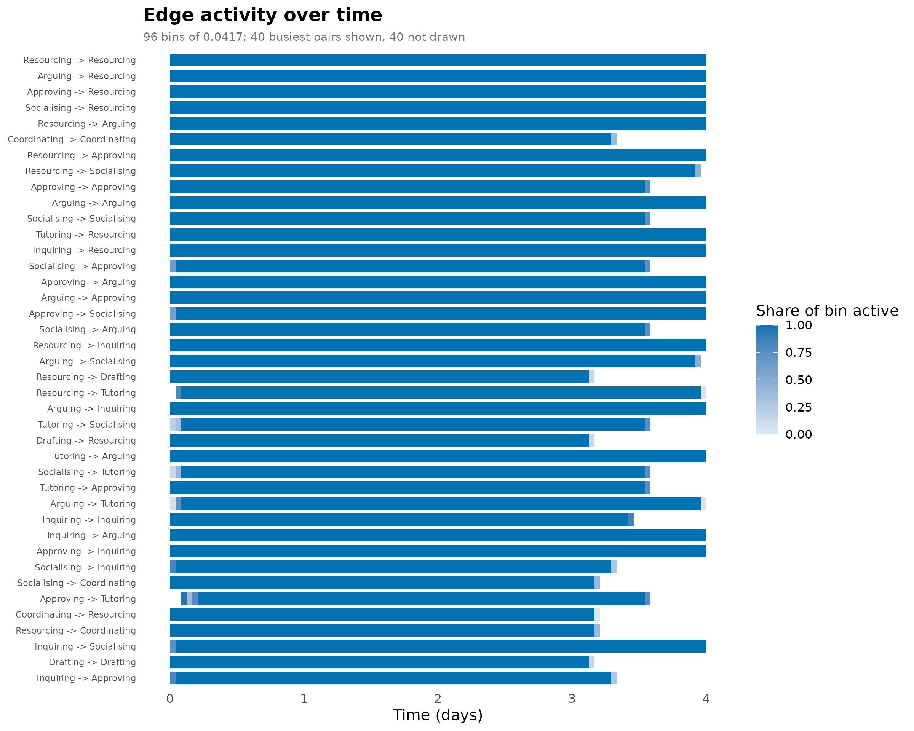
The bin is one hour (step = 1 / 24 on a network measured
in days).
Formation, dissolution, and active ties
The same tie events as counts over time, with the active-tie stock
beneath them. This is the plotted form of the events()
table above.
plot(dn, type = "activity")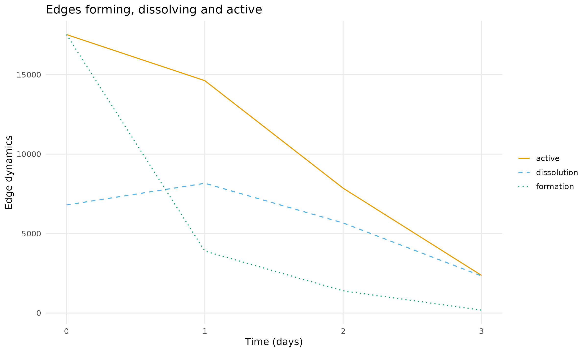
Whole-window network through cograph
The union of everything that was ever active, drawn by cograph with
Dynet’s rendering defaults; layout is the only choice made
here.
plot(dn, type = "network", layout = "oval")
Duration-weighted collapsed network
The binary union above treats a tie that lived one hour like a tie
that lived five days.
collapse_network(weight = "union_duration") weights each
pair by the total time it was active instead, which is the aggregate the
original analysis approximated by setting edge.lwd from
tiedDuration().
collapsed <- collapse_network(dn, weight = "union_duration")
plot(collapsed, layout = "oval")
Temporal snapshots
Nine equally spaced cross-sections of the same network, the static-panel view of the process.
plot(dn, type = "snapshots", panels = 9)
Proximity timeline with phase networks
Visualize.Rmd drew proximity.timeline() at
time.increment = 0.1 to show codes drifting together and
apart. Dynet’s proximity view is the same idea: each code is a line
whose vertical position tracks its distance from the others, sliced
finely and annotated here with five phase networks.
plot(dn, type = "proximity", phases = 5, slices = 80)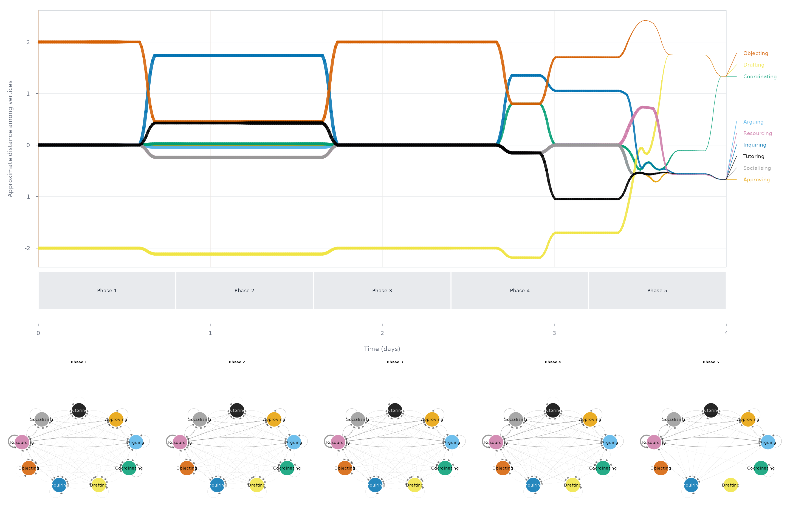
Proximity trajectories alone
The same construction driven by betweenness instead of degree, without the phase networks.
plot(dn, type = "proximity", measure = "betweenness",
networks = FALSE, slices = 80)
Multilayer views of the sliced network
The original pipeline had no multilayer view: ndtv drew
the process as a proximity timeline and as animated snapshots, and the
code-by-code structure was read off aggregate matrices. Cutting the
window into slices and treating each slice as a layer of one multilayer
network shows both at once — who was talking to whom, and when.
Each slice carries the full code set, so a code keeps its identity across the stack. The slicing, the supra-adjacency, the layer membership and the display labels are assembled by the package.
Node-link layers
Three slices of the four-day window, each a plane of the same nine codes.
plot(dn, type = "layers", step = 4 / 3, layout = "circle")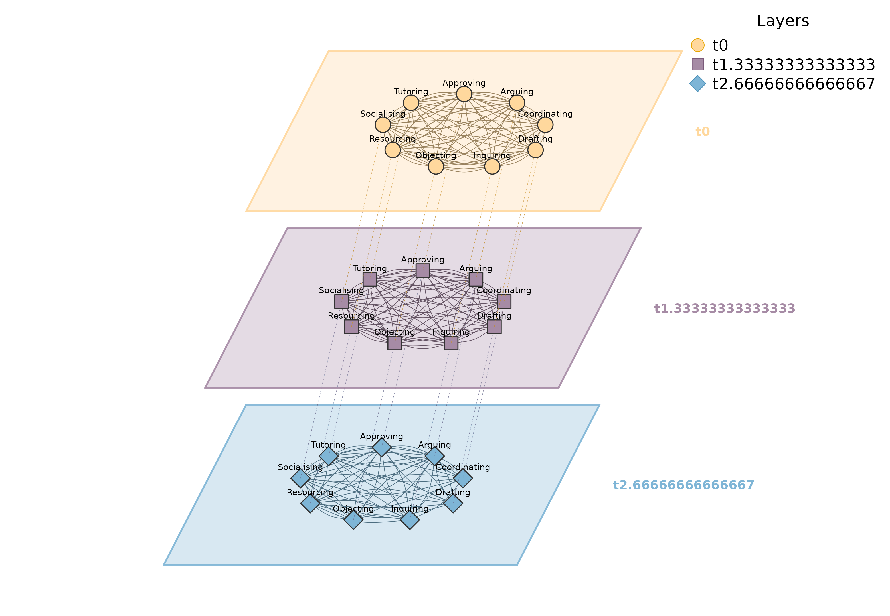
omega weights the identity arcs carrying a code from one
slice to the next — the interlayer coupling. Zero leaves the slices
independent.
plot(dn, type = "layers", step = 4 / 3, omega = 0)Heatmap planes
The same slices as matrices rather than diagrams. Row and column names are drawn once against the front plane, so a cell reads as a code pair rather than an anonymous square.
plot(dn, type = "heatmap", step = 4 / 3)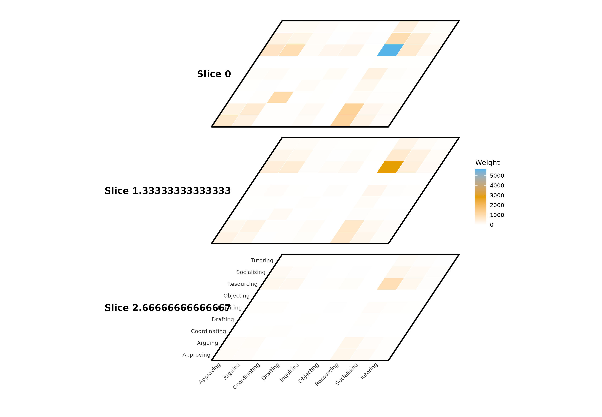
Thresholded, so only substantial transitions carry ink:
plot(dn, type = "heatmap", step = 4 / 3, threshold = 50)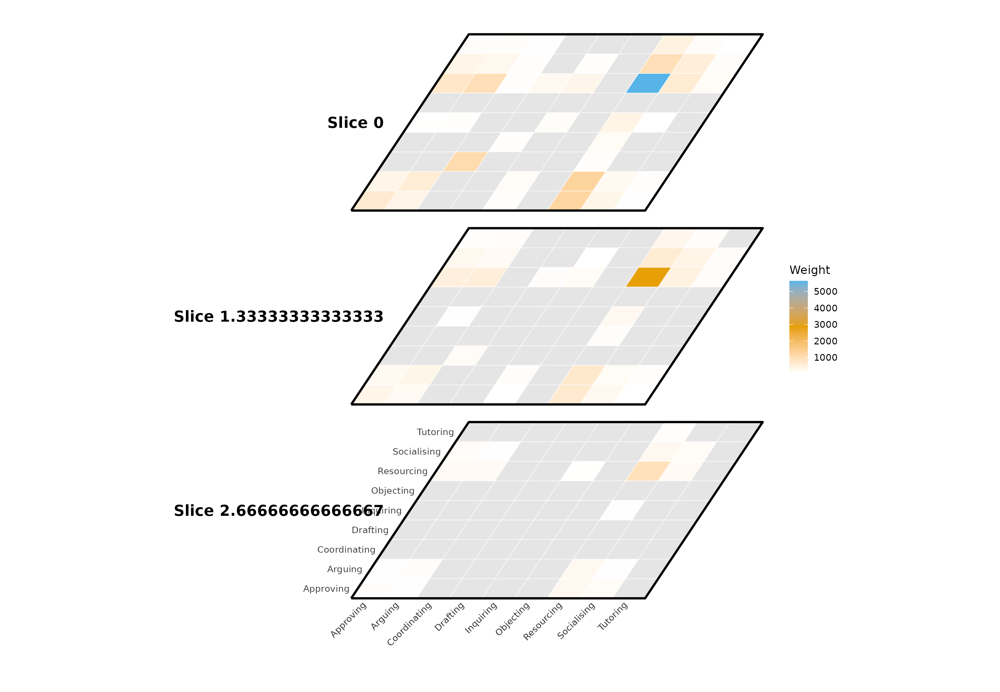
At the hourly step used for the heatmaps below, the four days split into 96 slices. That is the right resolution for a grid or a line, and too many planes to read as a stack — shown here so the limit is visible rather than asserted.
plot(dn, type = "heatmap", step = 1 / 24, show_node_labels = FALSE)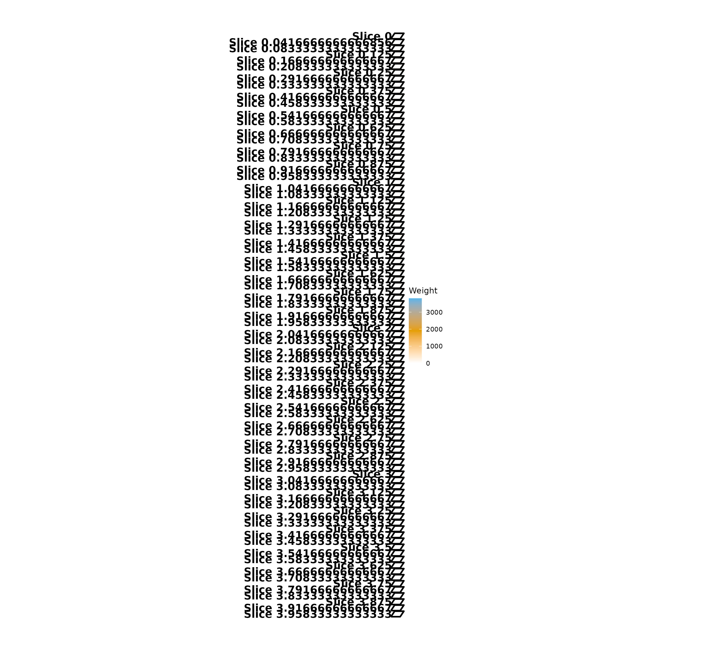
Projected stack
cograph::plot_temporal()’s oblique projection, with one
colour per code held across every plane. Empty windows are drawn rather
than skipped, so a gap in the process is visible as a gap.
plot(dn, type = "stack", step = 4 / 3)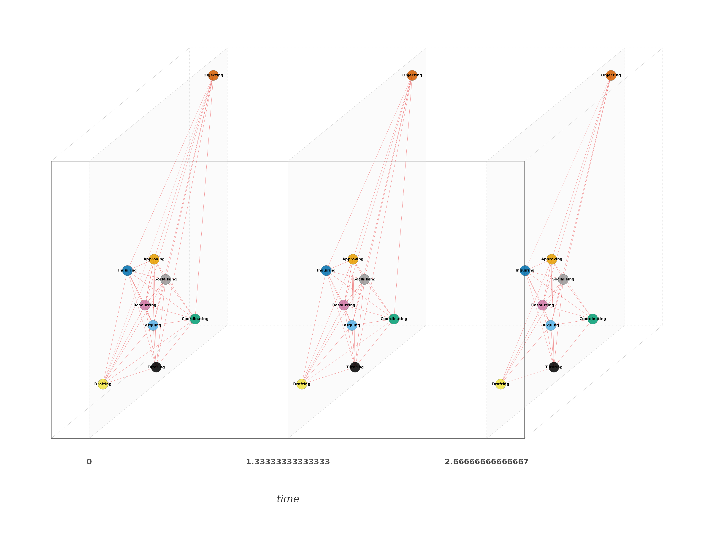
Cumulative, so each plane carries everything that has happened up to it:
plot(dn, type = "stack", step = 4 / 3, cumulative = TRUE)
Graph-level trajectories
Main structural descriptives
The original scripts collected these one call at a time and
cbind()-ed the results into a wide matrix.
metrics() takes the whole set in one call and returns one
tidy row per time point and measure.
graph_main <- metrics(
dn,
measure = c(
"density", "efficiency", "connectedness", "reciprocity",
"edges", "mean_degree"
),
step = 1 / 24, window = 1 / 24
)
graph_main## # Graph structure (graph-level)
## # 96 time points, 0.04166667 per bin | time in days
## # measures: density, efficiency, connectedness, reciprocity, edges, mean_degree
## time measure value
## 0.00000000 density 0.7916667
## 0.00000000 efficiency 0.2343750
## 0.00000000 connectedness 1.0000000
## 0.00000000 reciprocity 0.9122807
## 0.00000000 edges 57.0000000
## 0.00000000 mean_degree 6.3333333
## 0.04166667 density 0.8194444
## 0.04166667 efficiency 0.2031250
## 0.04166667 connectedness 1.0000000
## 0.04166667 reciprocity 0.9152542
## 0.04166667 edges 59.0000000
## 0.04166667 mean_degree 6.5555556
## # 564 more rows. summary() aggregates them; plot() draws them.
plot(graph_main, type = "ridge")
reciprocity here is the edgewise reciprocity — the share
of arcs that are reciprocated — which is what
tSnaStats("grecip", measure = "edgewise") returned in
Centralities_trees.Rmd. The study also reported
tSnaStats("mutuality"), the raw count of mutual dyads; that
count is the mutual column of the dyad census below.
Dyad census
dyads <- metrics(
dn, measure = c("mutual", "asymmetric", "null"),
step = 1 / 24, window = 1 / 24
)
dyads## # Graph structure (graph-level)
## # 96 time points, 0.04166667 per bin | time in days
## # measures: mutual, asymmetric, null
## time measure value
## 0.00000000 mutual 26
## 0.00000000 asymmetric 5
## 0.00000000 null 5
## 0.04166667 mutual 27
## 0.04166667 asymmetric 5
## 0.04166667 null 4
## 0.08333333 mutual 28
## 0.08333333 asymmetric 4
## 0.08333333 null 4
## 0.12500000 mutual 28
## 0.12500000 asymmetric 5
## 0.12500000 null 3
## # 276 more rows. summary() aggregates them; plot() draws them.
plot(dyads)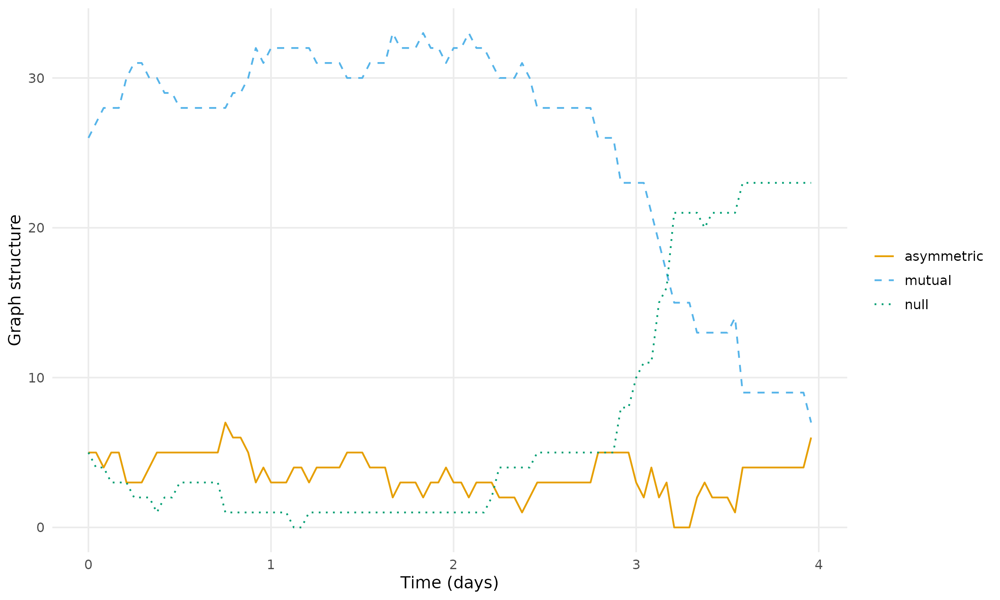
Triad census
Centralities_trees.Rmd swept a triad census with
tSnaStats("triad.census"). Dynet returns the same sixteen
MAN triad types, one row per type per time point, drawn here as a
heatmap.
triads <- metrics(dn, measure = "triads", step = 1 / 24, window = 1 / 24)
triads## # Triad census (graph-level)
## # 96 time points, 0.04166667 per bin | time in days
## # measures: triad_003, triad_012, triad_102, triad_021D, triad_021U, triad_021C, triad_111D, triad_111U, triad_030T, triad_030C, triad_201, triad_120D, triad_120U, triad_120C, triad_210, triad_300
## time measure value
## 0 triad_003 0
## 0 triad_012 1
## 0 triad_102 9
## 0 triad_021D 0
## 0 triad_021U 0
## 0 triad_021C 0
## 0 triad_111D 0
## 0 triad_111U 8
## 0 triad_030T 0
## 0 triad_030C 0
## 0 triad_201 7
## 0 triad_120D 3
## # 1524 more rows. summary() aggregates them; plot() draws them.
plot(triads, type = "heatmap")
Lightweight ERGM-style descriptives
The counterparts of the study’s tErgmStats() terms —
idegree1.5, odegree1.5, triangle
— plus the two-star and two-path counts that describe how the local
structure builds up.
ergm_descriptives <- metrics(
dn,
measure = c(
"indegree_1_5", "outdegree_1_5", "triangles",
"in_2stars", "out_2stars", "two_paths"
),
step = 1 / 24, window = 1 / 24
)
ergm_descriptives## # Graph structure (graph-level)
## # 96 time points, 0.04166667 per bin | time in days
## # measures: indegree_1_5, outdegree_1_5, triangles, in_2stars, out_2stars, two_paths
## time measure value
## 0.00000000 indegree_1_5 146.3021
## 0.00000000 outdegree_1_5 148.0187
## 0.00000000 triangles 376.0000
## 0.00000000 in_2stars 161.0000
## 0.00000000 out_2stars 166.0000
## 0.00000000 two_paths 325.0000
## 0.04166667 indegree_1_5 155.0977
## 0.04166667 outdegree_1_5 155.3815
## 0.04166667 triangles 436.0000
## 0.04166667 in_2stars 176.0000
## 0.04166667 out_2stars 177.0000
## 0.04166667 two_paths 356.0000
## # 564 more rows. summary() aggregates them; plot() draws them.
plot(ergm_descriptives, type = "ridge")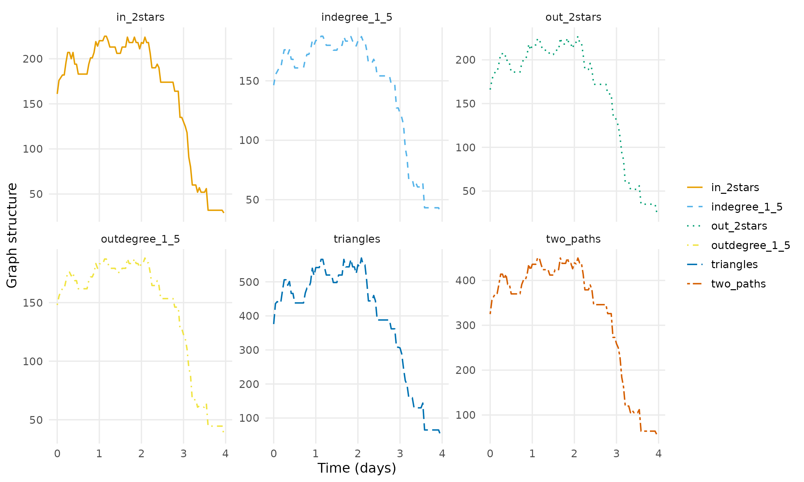
Node-level trajectories
Centrality
The original centrality section was four while loops
that called tSnaStats() once per measure, transposed each
result, and stitched the pieces back together with cbind()
and rbind() into
Centralities_Combined_rounded.xlsx. Here the same five
measures — degree, closeness, betweenness, eigenvector, flow betweenness
— plus diffusion degree (the study computed that one separately, with
centiserve, and only on the aggregate) come from a single
call that already returns them tidily.
centrality <- dyn_centrality(
dn,
measure = c(
"degree", "closeness", "betweenness", "eigenvector",
"flow_betweenness", "diffusion"
),
step = 1 / 24, window = 1 / 24
)
centrality## # Centrality (node-level)
## # 9 vertices | 96 time points, 0.04166667 per bin | time in days
## # measures: degree, closeness, betweenness, eigenvector, flow_betweenness, diffusion
## time node measure value
## 0 Approving degree 14.0000000
## 0 Arguing degree 17.0000000
## 0 Coordinating degree 15.0000000
## 0 Drafting degree 15.0000000
## 0 Inquiring degree 15.0000000
## 0 Objecting degree 7.0000000
## 0 Resourcing degree 16.0000000
## 0 Socialising degree 18.0000000
## 0 Tutoring degree 15.0000000
## 0 Approving closeness 0.8888889
## 0 Arguing closeness 1.0000000
## 0 Coordinating closeness 0.8888889
## # 5172 more rows. summary() aggregates them; plot() draws them.
plot(centrality, type = "heatmap")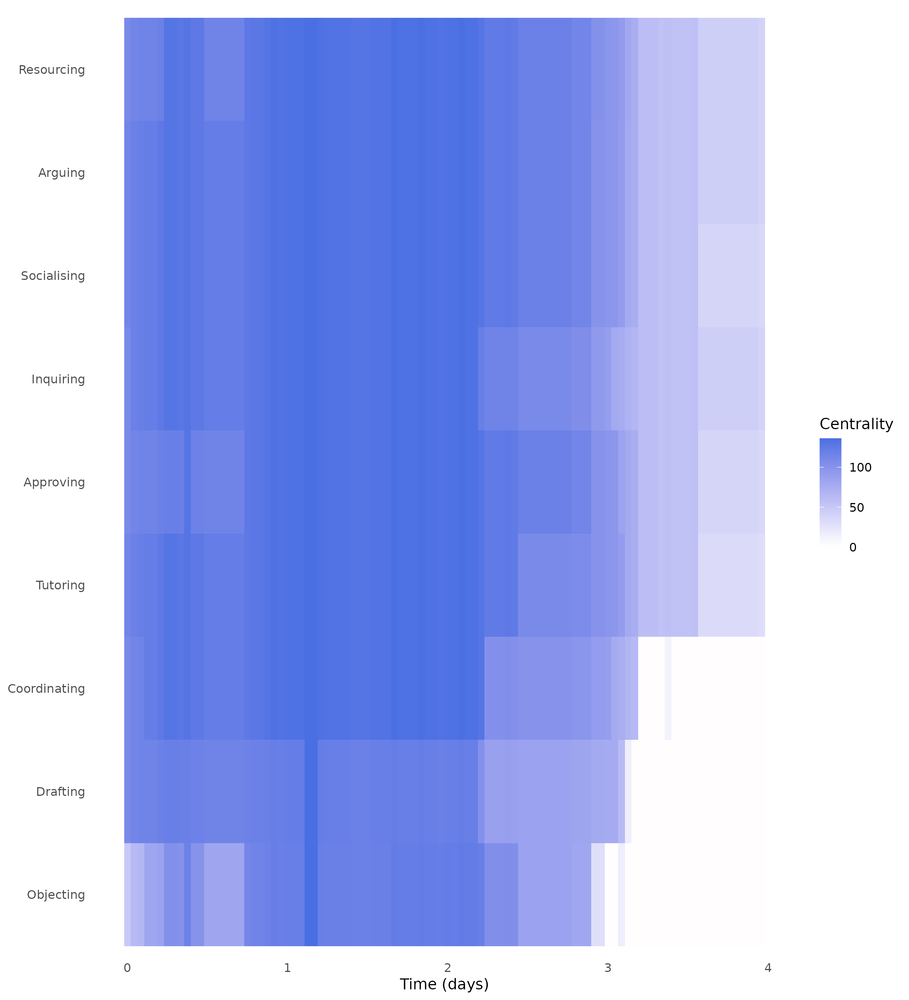
plot(centrality, type = "ridge", top = 10)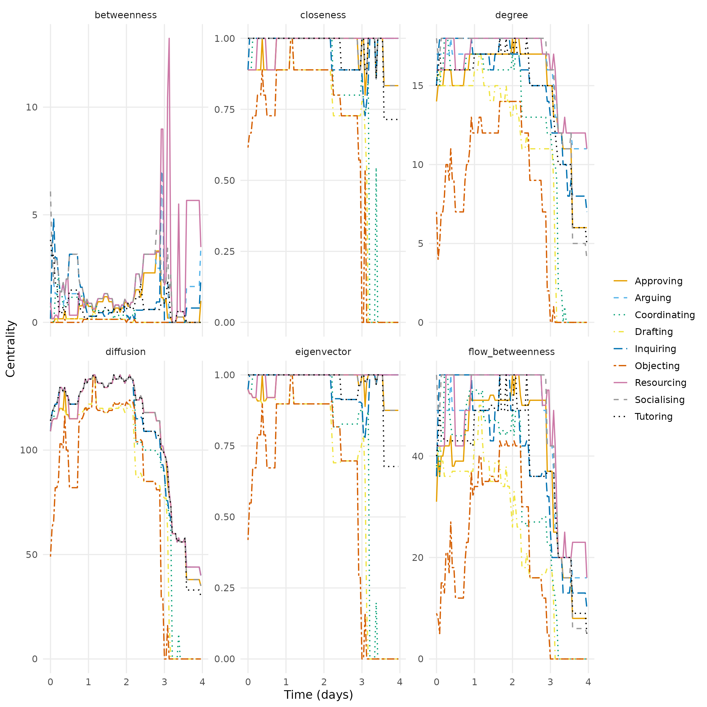
In-degree and out-degree
The study ran separate loops with cmode = "indegree" and
cmode = "outdegree"; in Dynet the direction is the
mode argument.
directed_degree <- dyn_centrality(
dn, measure = "degree", mode = "in",
step = 1 / 24, window = 1 / 24
)
out_degree <- dyn_centrality(
dn, measure = "degree", mode = "out",
step = 1 / 24, window = 1 / 24
)
plot(directed_degree, type = "heatmap")
plot(out_degree, type = "heatmap")
Prestige
The four prestige variants the study looped over —
indegree, eigenvector, domain and
domain.proximity — are the four values of the
prestige argument.
prestige_indegree <- dyn_centrality(
dn, measure = "prestige", prestige = "indegree",
step = 1 / 24, window = 1 / 24
)
prestige_eigenvector <- dyn_centrality(
dn, measure = "prestige", prestige = "eigenvector",
step = 1 / 24, window = 1 / 24
)
prestige_domain <- dyn_centrality(
dn, measure = "prestige", prestige = "domain",
step = 1 / 24, window = 1 / 24
)
prestige_proximity <- dyn_centrality(
dn, measure = "prestige", prestige = "domain.proximity",
step = 1 / 24, window = 1 / 24
)
plot(prestige_indegree, type = "heatmap")
plot(prestige_eigenvector, type = "heatmap")
plot(prestige_domain, type = "heatmap")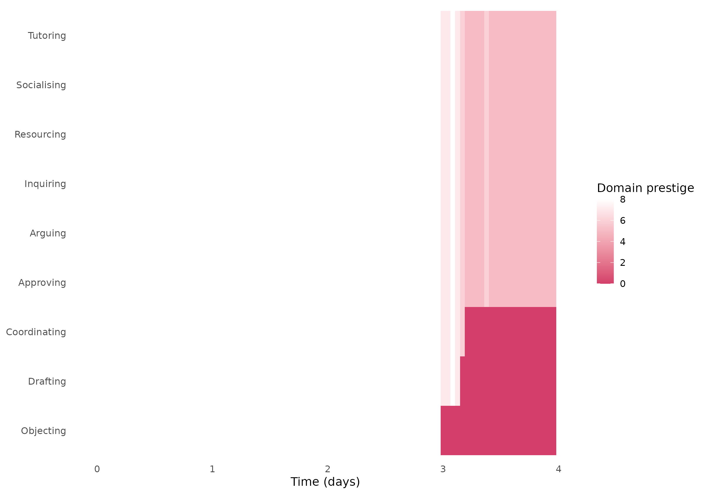
plot(prestige_proximity, type = "heatmap")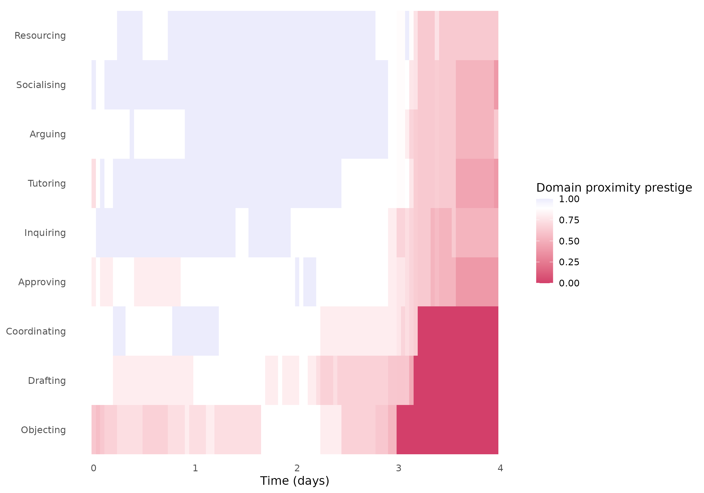
Code-to-code mixing
tErgmStats('nodemix("Name")') produced one column per
ordered pair of codes, which the original scripts then had to un-widen
and re-aggregate by hand. mixing() returns the same 9 x 9
flows already long, one row per time point and per ordered pair.
mixing_flows <- mixing(dn, attribute = "name", step = 1 / 24, window = 1 / 24)
mixing_flows## # Mixing by name (graph-level)
## # 96 time points, 0.04166667 per bin | time in days
## # measures: Approving -> Approving, Arguing -> Approving, Coordinating -> Approving, Drafting -> Approving, Inquiring -> Approving, Objecting -> Approving, Resourcing -> Approving, Socialising -> Approving, Tutoring -> Approving, Approving -> Arguing, Arguing -> Arguing, Coordinating -> Arguing, Drafting -> Arguing, Inquiring -> Arguing, Objecting -> Arguing, Resourcing -> Arguing, Socialising -> Arguing, Tutoring -> Arguing, Approving -> Coordinating, Arguing -> Coordinating, Coordinating -> Coordinating, Drafting -> Coordinating, Inquiring -> Coordinating, Objecting -> Coordinating, Resourcing -> Coordinating, Socialising -> Coordinating, Tutoring -> Coordinating, Approving -> Drafting, Arguing -> Drafting, Coordinating -> Drafting, Drafting -> Drafting, Inquiring -> Drafting, Objecting -> Drafting, Resourcing -> Drafting, Socialising -> Drafting, Tutoring -> Drafting, Approving -> Inquiring, Arguing -> Inquiring, Coordinating -> Inquiring, Drafting -> Inquiring, Inquiring -> Inquiring, Objecting -> Inquiring, Resourcing -> Inquiring, Socialising -> Inquiring, Tutoring -> Inquiring, Approving -> Objecting, Arguing -> Objecting, Coordinating -> Objecting, Drafting -> Objecting, Inquiring -> Objecting, Objecting -> Objecting, Resourcing -> Objecting, Socialising -> Objecting, Tutoring -> Objecting, Approving -> Resourcing, Arguing -> Resourcing, Coordinating -> Resourcing, Drafting -> Resourcing, Inquiring -> Resourcing, Objecting -> Resourcing, Resourcing -> Resourcing, Socialising -> Resourcing, Tutoring -> Resourcing, Approving -> Socialising, Arguing -> Socialising, Coordinating -> Socialising, Drafting -> Socialising, Inquiring -> Socialising, Objecting -> Socialising, Resourcing -> Socialising, Socialising -> Socialising, Tutoring -> Socialising, Approving -> Tutoring, Arguing -> Tutoring, Coordinating -> Tutoring, Drafting -> Tutoring, Inquiring -> Tutoring, Objecting -> Tutoring, Resourcing -> Tutoring, Socialising -> Tutoring, Tutoring -> Tutoring
## # active binary-dyad counts between vertex groups per time bin
## time measure value from_group to_group
## 0 Approving -> Approving 1 Approving Approving
## 0 Arguing -> Approving 1 Arguing Approving
## 0 Coordinating -> Approving 0 Coordinating Approving
## 0 Drafting -> Approving 1 Drafting Approving
## 0 Inquiring -> Approving 1 Inquiring Approving
## 0 Objecting -> Approving 0 Objecting Approving
## 0 Resourcing -> Approving 1 Resourcing Approving
## 0 Socialising -> Approving 1 Socialising Approving
## 0 Tutoring -> Approving 1 Tutoring Approving
## 0 Approving -> Arguing 1 Approving Arguing
## 0 Arguing -> Arguing 1 Arguing Arguing
## 0 Coordinating -> Arguing 1 Coordinating Arguing
## # 7764 more rows. summary() aggregates them; plot() draws them.
plot(mixing_flows, type = "heatmap")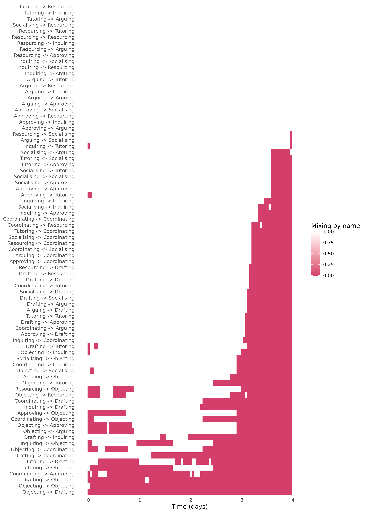
The original scripts then pulled out the mixing columns that involved
regulation (select(contains("reg")), which caught both
Group_regulation and T.Regulation, here
Coordinating and Tutoring). The highlight
below narrows that to the coordinating flows, which keeps the lines
distinguishable. The result carries from_group and
to_group columns, so the selection is a
subset() of the returned table handed straight back to the
plot method; no mixing statistic is rebuilt here.
group_regulation_flows <- with(
subset(as.data.frame(mixing_flows),
from_group == "Coordinating" | to_group == "Coordinating"),
unique(measure)
)
plot(mixing_flows, highlight = group_regulation_flows)
Tie and vertex duration
Incident tie counts and durations by node
tiedDuration() was called six times in
Visualize.Rmd — count and duration, crossed with the
in, out and combined
neighbourhoods — and the six vectors were cbind()-ed into a
table. durations(unit = "node_ties") gives the same
quantities per node, with mode selecting the neighbourhood
and measure selecting event count, total duration, or the
union of active time (which, unlike the total, does not double-count
overlapping spells).
node_ties_all <- durations(
dn, unit = "node_ties", mode = "all",
measure = c("events", "total", "union")
)
node_ties_in <- durations(
dn, unit = "node_ties", mode = "in",
measure = c("events", "total", "union")
)
node_ties_out <- durations(
dn, unit = "node_ties", mode = "out",
measure = c("events", "total", "union")
)
plot(node_ties_all)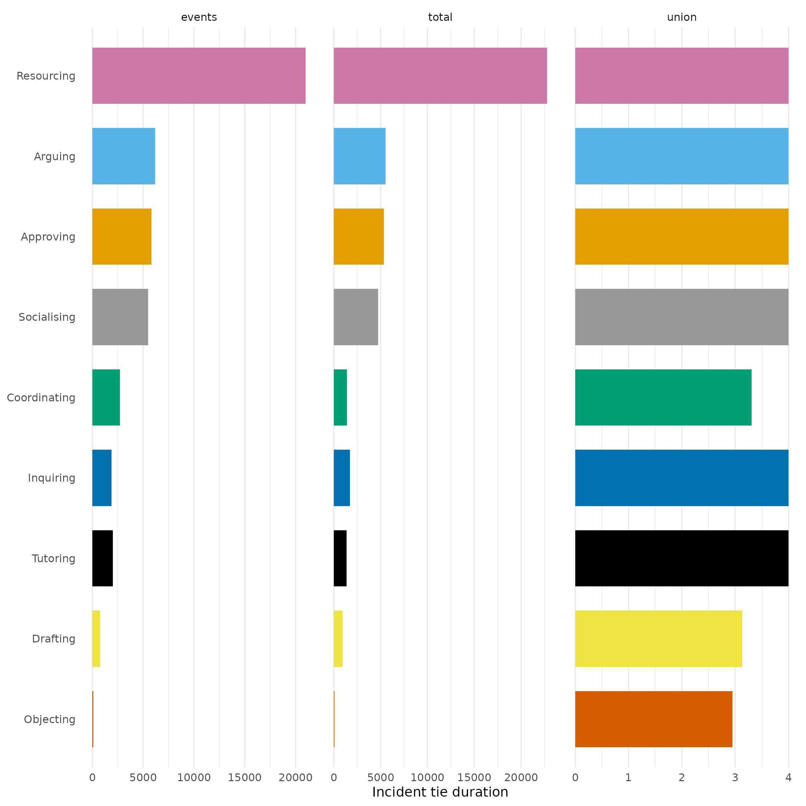
plot(node_ties_in)
plot(node_ties_out)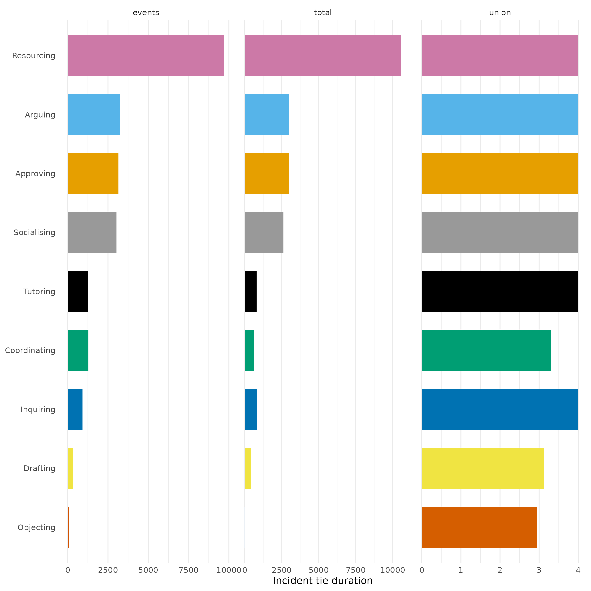
Edge-pair duration
The same accounting one level down, per ordered pair of codes, with the mean spell length added.
pair_duration <- durations(
dn, unit = "pair",
measure = c("events", "total", "union", "mean")
)
pair_duration## # Relationship duration (edge-level)
## # time in days
## # measures: events, mean, total, union
## # durations in days
## from to measure value
## Approving Approving events 719
## Approving Arguing events 417
## Approving Coordinating events 30
## Approving Drafting events 30
## Approving Inquiring events 110
## Approving Objecting events 4
## Approving Resourcing events 1353
## Approving Socialising events 385
## Approving Tutoring events 100
## Arguing Approving events 415
## Arguing Arguing events 670
## Arguing Coordinating events 44
## # 308 more rows. summary() aggregates them; plot() draws them.
plot(pair_duration)
Vertex activity duration
How long each code was itself active, as opposed to how long its ties were.
vertex_duration <- durations(dn, unit = "vertex_activity")
vertex_duration## # Vertex activity duration (node-level)
## # 9 vertices | time in days
## # measures: events, total, union
## # durations in days
## node measure value
## Approving events 1
## Arguing events 1
## Coordinating events 1
## Drafting events 1
## Inquiring events 1
## Objecting events 1
## Resourcing events 1
## Socialising events 1
## Tutoring events 1
## Approving total 4
## Arguing total 4
## Coordinating total 4
## # 15 more rows. summary() aggregates them; plot() draws them.
plot(vertex_duration)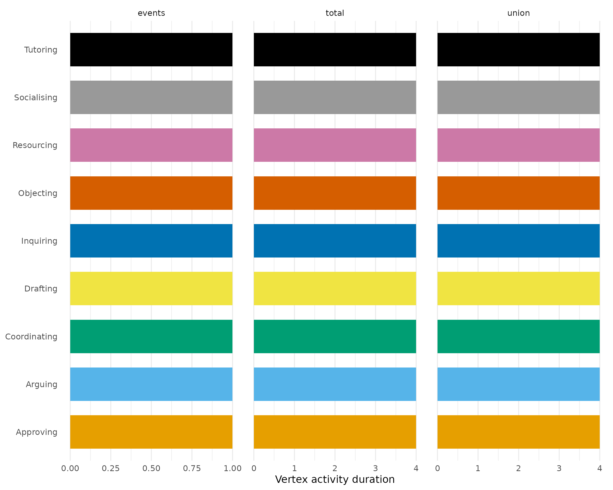
Temporal reachability and centrality
tReach() was used to count, for each code, how many
other codes it could reach along time-respecting paths within a window.
dyn_reachability() answers the same question in both
directions at once, and dyn_centrality(scope = "temporal")
returns the path-based measures computed on the time-respecting paths
themselves rather than on a snapshot.
reachability <- dyn_reachability(
dn, direction = "both", measure = c("reach", "reach_count")
)
reachability## # Reachability (node-level)
## # 9 vertices | time in days
## # measures: forward_reach, forward_reach_count, backward_reach, backward_reach_count
## # count and share of other vertices joined by a time-respecting path
## node measure value
## Approving forward_reach 1
## Arguing forward_reach 1
## Coordinating forward_reach 1
## Drafting forward_reach 1
## Inquiring forward_reach 1
## Objecting forward_reach 1
## Resourcing forward_reach 1
## Socialising forward_reach 1
## Tutoring forward_reach 1
## Approving forward_reach_count 8
## Arguing forward_reach_count 8
## Coordinating forward_reach_count 8
## # 24 more rows. summary() aggregates them; plot() draws them.
plot(reachability)
temporal_centrality <- dyn_centrality(
dn,
measure = c("closeness", "betweenness", "reach", "reach_count"),
scope = "temporal"
)## Warning: Zero-latency reachable sets make temporal closeness infinite; set a
## positive `traversal_time`.
temporal_centrality## # Temporal centrality (node-level)
## # 9 vertices | time in days
## # measures: closeness, betweenness, reach, reach_count
## # computed on time-respecting paths across the whole window
## node measure value
## Approving closeness Inf
## Arguing closeness Inf
## Coordinating closeness Inf
## Drafting closeness Inf
## Inquiring closeness Inf
## Objecting closeness Inf
## Resourcing closeness Inf
## Socialising closeness Inf
## Tutoring closeness Inf
## Approving betweenness 0.4444444
## Arguing betweenness 0.5705128
## Coordinating betweenness 0.4583333
## # 24 more rows. summary() aggregates them; plot() draws them.
plot(temporal_centrality)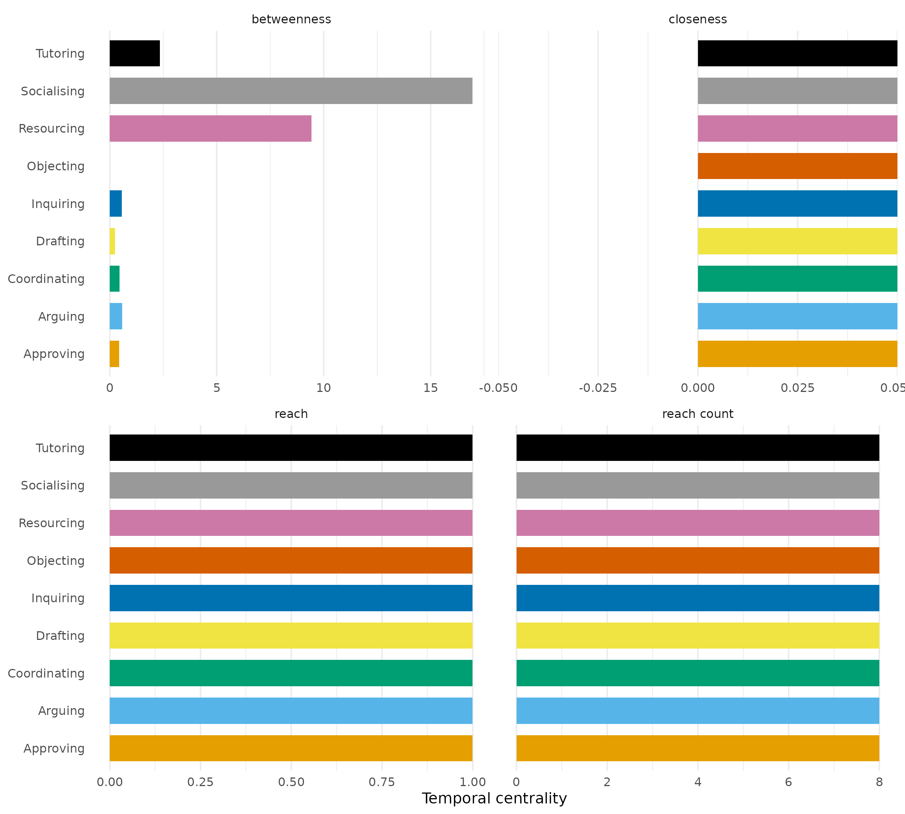
Forward temporal paths from every code
Visualize.Rmd looped over the codes with
tPath(direction = "fwd", type = "earliest.arrive", graph.step.time = 0.1)
and drew three pictures per code. paths() answers the same
query — Dynet receives that traversal cost as
traversal_time = 0.1, one tenth of a day per hop — and
returns one tidy object per source.
Before the atlas, one source in full, to show what the objects contain.
inquiring_paths <- paths(
dn, from = "Inquiring", direction = "forward", traversal_time = 0.1
)
inquiring_paths## # Time-respecting paths from 'Inquiring', from t = 0
## # reaches 8 of 8 other vertices | time in days
## # routes are endpoint-specific session-integral optima, not one predecessor tree
## # traversal 0.1 days per hop
## node reachable arrival_time attained latency n_hops n_paths
## Approving TRUE 0.1077083 TRUE 0.1077083 1 1
## Arguing TRUE 0.1000000 TRUE 0.1000000 1 5
## Coordinating TRUE 0.1052199 TRUE 0.1052199 1 1
## Drafting TRUE 0.1000000 TRUE 0.1000000 1 2
## Inquiring TRUE 0.0000000 TRUE 0.0000000 0 1
## Objecting TRUE 0.1891667 TRUE 0.1891667 1 1
## Resourcing TRUE 0.1000000 TRUE 0.1000000 1 9
## Socialising TRUE 0.1000000 TRUE 0.1000000 1 2
## Tutoring TRUE 0.1530208 TRUE 0.1530208 1 1
## path_session n_best_sessions
## C 1
## <NA> 4
## D 1
## <NA> 2
## <NA> 0
## C 1
## <NA> 5
## <NA> 2
## A 1
path_trajectories(inquiring_paths)## # Forward temporal trajectory tree from Inquiring
## # 9 nodes, 1 hops deep, 23 routes
## node parent depth count
## 1 Inquiring@0 <NA> 0 23
## 2 Inquiring@0 -> Approving@0.107708333333 Inquiring@0 1 1
## 3 Inquiring@0 -> Arguing@0.1 Inquiring@0 1 5
## 4 Inquiring@0 -> Coordinating@0.105219907408 Inquiring@0 1 1
## 5 Inquiring@0 -> Drafting@0.1 Inquiring@0 1 2
## 6 Inquiring@0 -> Objecting@0.189166666667 Inquiring@0 1 1
## 7 Inquiring@0 -> Resourcing@0.1 Inquiring@0 1 9
## 8 Inquiring@0 -> Socialising@0.1 Inquiring@0 1 2
## 9 Inquiring@0 -> Tutoring@0.153020833333 Inquiring@0 1 1
## probability vertex time session branch
## 1 NA Inquiring 0.0000000 <NA> 4.5
## 2 0.04347826 Approving 0.1077083 <NA> 8.0
## 3 0.21739130 Arguing 0.1000000 <NA> 7.0
## 4 0.04347826 Coordinating 0.1052199 <NA> 6.0
## 5 0.08695652 Drafting 0.1000000 <NA> 5.0
## 6 0.04347826 Objecting 0.1891667 <NA> 4.0
## 7 0.39130435 Resourcing 0.1000000 <NA> 3.0
## 8 0.08695652 Socialising 0.1000000 <NA> 2.0
## 9 0.04347826 Tutoring 0.1530208 <NA> 1.0The printed table gives, per destination, the earliest attainable
arrival time, the latency from the source, the number of hops on the
optimal route, and how many distinct optimal routes achieve it.
path_trajectories() is the tidy tree behind the picture:
one row per route prefix, so a code reached under two different temporal
histories is two rows and the branches never cross misleadingly.
The atlas below repeats that for every code. Each panel is a left-to-right trajectory tree: branch width and node size show how many optimal routes use a branch, node fill shows the same count, and every node prints its vertex name and value beneath its circle, so nothing is carried by colour alone. The table above each tree is the path result the tree is drawn from.
# A loop, not an apply: each iteration emits a section heading, a table and a
# plot into the asis stream in order, which is a sequence of side effects
# rather than a value to collect.
code_names <- with(as.data.frame(dn, what = "nodes"), name)
for (source_node in code_names) {
cat("\n\n## ", source_node, "\n\n", sep = "")
forward_paths <- paths(
dn, from = source_node, direction = "forward", traversal_time = 0.1
)
print(knitr::kable(
as.data.frame(forward_paths), digits = 3,
caption = paste("Earliest-arrival paths from", source_node)
))
cat("\n\n")
print(plot_path_trajectories(
forward_paths, measure = "frequency", orientation = "horizontal"
))
cat("\n\n")
}Approving
| node | reachable | arrival_time | attained | latency | n_hops | n_paths | path_session | n_best_sessions |
|---|---|---|---|---|---|---|---|---|
| Approving | TRUE | 0.000 | TRUE | 0.000 | 0 | 1 | NA | 0 |
| Arguing | TRUE | 0.100 | TRUE | 0.100 | 1 | 4 | NA | 4 |
| Coordinating | TRUE | 0.138 | TRUE | 0.138 | 1 | 1 | C | 1 |
| Drafting | TRUE | 0.100 | TRUE | 0.100 | 1 | 3 | NA | 2 |
| Inquiring | TRUE | 0.100 | TRUE | 0.100 | 1 | 2 | NA | 2 |
| Objecting | TRUE | 0.200 | TRUE | 0.200 | 2 | 1 | C | 1 |
| Resourcing | TRUE | 0.100 | TRUE | 0.100 | 1 | 7 | NA | 5 |
| Socialising | TRUE | 0.100 | TRUE | 0.100 | 1 | 2 | NA | 2 |
| Tutoring | TRUE | 0.200 | TRUE | 0.200 | 2 | 7 | NA | 3 |
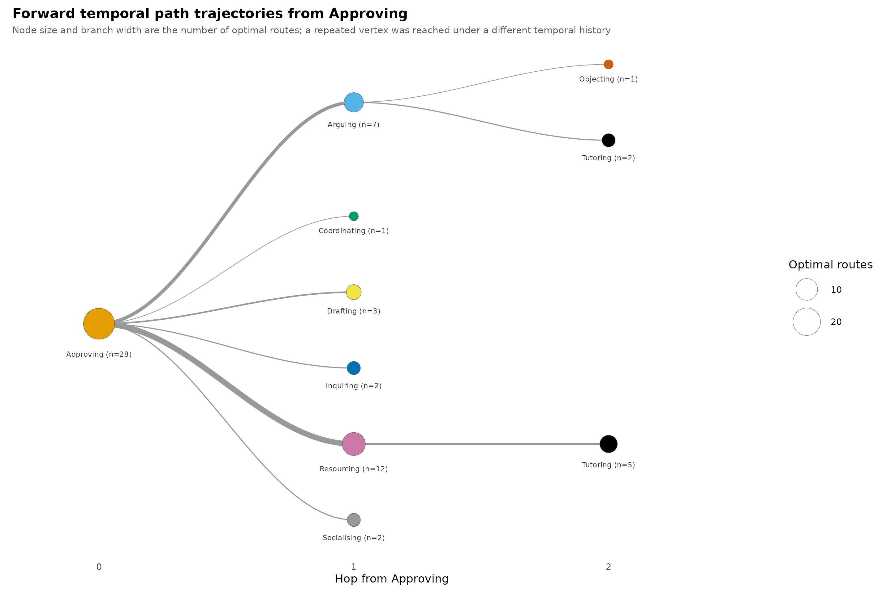
Arguing
| node | reachable | arrival_time | attained | latency | n_hops | n_paths | path_session | n_best_sessions |
|---|---|---|---|---|---|---|---|---|
| Approving | TRUE | 0.100 | TRUE | 0.100 | 1 | 3 | NA | 2 |
| Arguing | TRUE | 0.000 | TRUE | 0.000 | 0 | 1 | NA | 0 |
| Coordinating | TRUE | 0.105 | TRUE | 0.105 | 1 | 1 | D | 1 |
| Drafting | TRUE | 0.100 | TRUE | 0.100 | 1 | 3 | NA | 2 |
| Inquiring | TRUE | 0.100 | TRUE | 0.100 | 1 | 7 | NA | 4 |
| Objecting | TRUE | 0.122 | TRUE | 0.122 | 1 | 1 | C | 1 |
| Resourcing | TRUE | 0.100 | TRUE | 0.100 | 1 | 9 | NA | 5 |
| Socialising | TRUE | 0.100 | TRUE | 0.100 | 1 | 2 | NA | 2 |
| Tutoring | TRUE | 0.133 | TRUE | 0.133 | 1 | 1 | A | 1 |
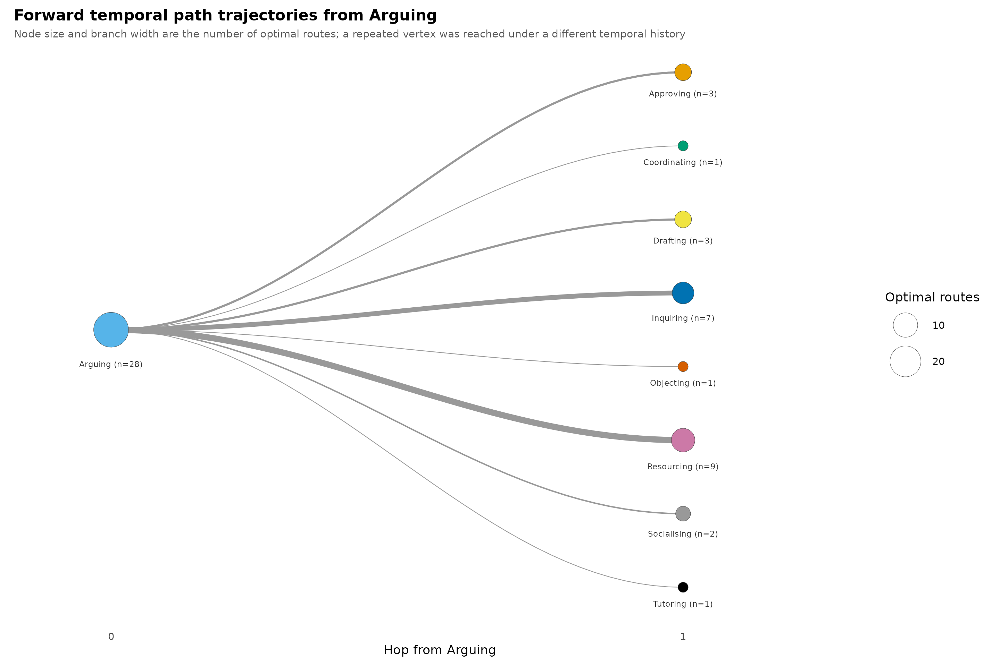
Coordinating
| node | reachable | arrival_time | attained | latency | n_hops | n_paths | path_session | n_best_sessions |
|---|---|---|---|---|---|---|---|---|
| Approving | TRUE | 0.146 | TRUE | 0.146 | 1 | 1 | C | 1 |
| Arguing | TRUE | 0.103 | TRUE | 0.103 | 1 | 1 | C | 1 |
| Coordinating | TRUE | 0.000 | TRUE | 0.000 | 0 | 1 | NA | 0 |
| Drafting | TRUE | 0.100 | TRUE | 0.100 | 1 | 1 | A | 1 |
| Inquiring | TRUE | 0.100 | TRUE | 0.100 | 1 | 1 | A | 1 |
| Objecting | TRUE | 0.203 | TRUE | 0.203 | 2 | 1 | C | 1 |
| Resourcing | TRUE | 0.100 | TRUE | 0.100 | 1 | 3 | NA | 2 |
| Socialising | TRUE | 0.100 | TRUE | 0.100 | 1 | 3 | NA | 2 |
| Tutoring | TRUE | 0.115 | TRUE | 0.115 | 1 | 1 | C | 1 |
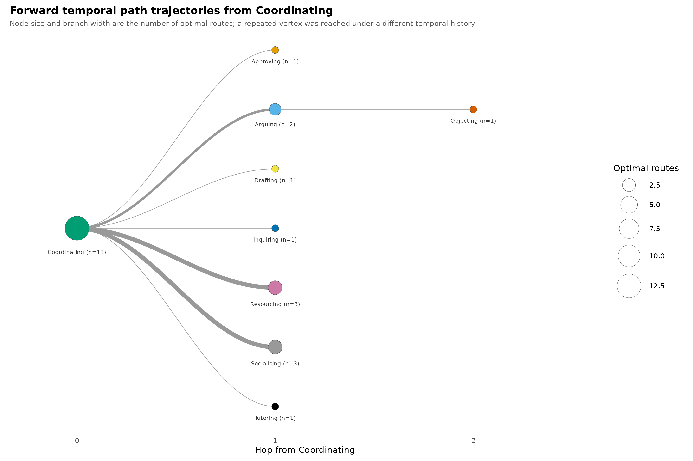
Drafting
| node | reachable | arrival_time | attained | latency | n_hops | n_paths | path_session | n_best_sessions |
|---|---|---|---|---|---|---|---|---|
| Approving | TRUE | 0.100 | TRUE | 0.100 | 1 | 2 | NA | 2 |
| Arguing | TRUE | 0.100 | TRUE | 0.100 | 1 | 3 | NA | 2 |
| Coordinating | TRUE | 0.141 | TRUE | 0.141 | 1 | 1 | E | 1 |
| Drafting | TRUE | 0.000 | TRUE | 0.000 | 0 | 1 | NA | 0 |
| Inquiring | TRUE | 0.100 | TRUE | 0.100 | 1 | 1 | A | 1 |
| Objecting | TRUE | 0.300 | TRUE | 0.300 | 3 | 10 | NA | 2 |
| Resourcing | TRUE | 0.100 | TRUE | 0.100 | 1 | 9 | NA | 5 |
| Socialising | TRUE | 0.100 | TRUE | 0.100 | 1 | 1 | A | 1 |
| Tutoring | TRUE | 0.200 | TRUE | 0.200 | 2 | 7 | NA | 3 |
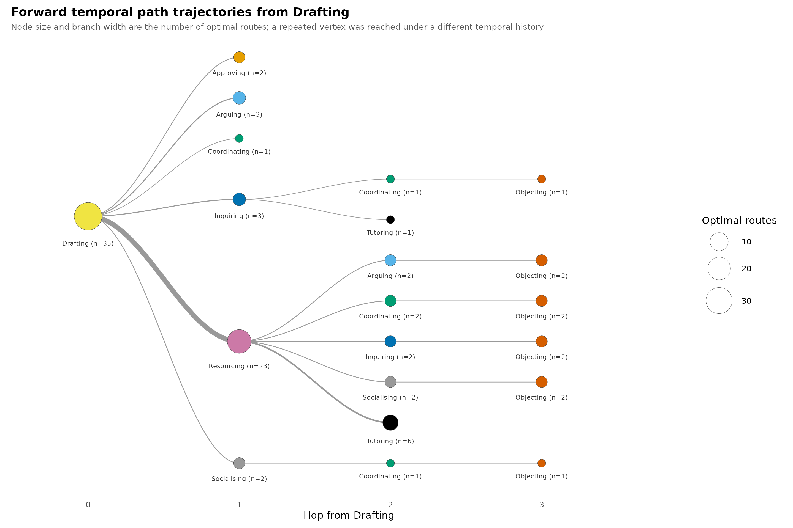
Inquiring
| node | reachable | arrival_time | attained | latency | n_hops | n_paths | path_session | n_best_sessions |
|---|---|---|---|---|---|---|---|---|
| Approving | TRUE | 0.108 | TRUE | 0.108 | 1 | 1 | C | 1 |
| Arguing | TRUE | 0.100 | TRUE | 0.100 | 1 | 5 | NA | 4 |
| Coordinating | TRUE | 0.105 | TRUE | 0.105 | 1 | 1 | D | 1 |
| Drafting | TRUE | 0.100 | TRUE | 0.100 | 1 | 2 | NA | 2 |
| Inquiring | TRUE | 0.000 | TRUE | 0.000 | 0 | 1 | NA | 0 |
| Objecting | TRUE | 0.189 | TRUE | 0.189 | 1 | 1 | C | 1 |
| Resourcing | TRUE | 0.100 | TRUE | 0.100 | 1 | 9 | NA | 5 |
| Socialising | TRUE | 0.100 | TRUE | 0.100 | 1 | 2 | NA | 2 |
| Tutoring | TRUE | 0.153 | TRUE | 0.153 | 1 | 1 | A | 1 |

Objecting
| node | reachable | arrival_time | attained | latency | n_hops | n_paths | path_session | n_best_sessions |
|---|---|---|---|---|---|---|---|---|
| Approving | TRUE | 0.200 | TRUE | 0.200 | 2 | 1 | A | 1 |
| Arguing | TRUE | 0.200 | TRUE | 0.200 | 2 | 2 | A | 1 |
| Coordinating | TRUE | 0.200 | TRUE | 0.200 | 2 | 2 | A | 1 |
| Drafting | TRUE | 0.276 | TRUE | 0.276 | 2 | 1 | C | 1 |
| Inquiring | TRUE | 0.176 | TRUE | 0.176 | 1 | 1 | C | 1 |
| Objecting | TRUE | 0.000 | TRUE | 0.000 | 0 | 1 | NA | 0 |
| Resourcing | TRUE | 0.200 | TRUE | 0.200 | 2 | 2 | A | 1 |
| Socialising | TRUE | 0.100 | TRUE | 0.100 | 1 | 1 | A | 1 |
| Tutoring | TRUE | 0.100 | TRUE | 0.100 | 1 | 1 | A | 1 |
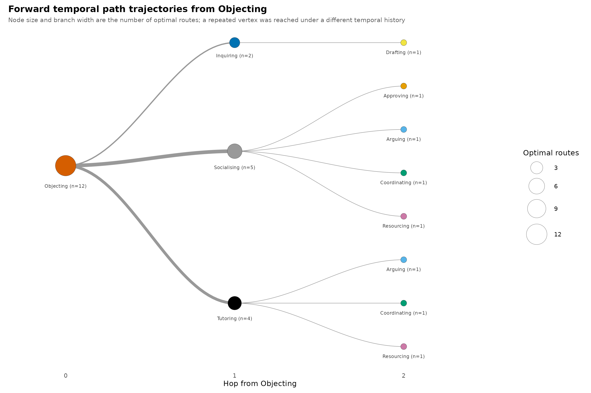
Resourcing
| node | reachable | arrival_time | attained | latency | n_hops | n_paths | path_session | n_best_sessions |
|---|---|---|---|---|---|---|---|---|
| Approving | TRUE | 0.100 | TRUE | 0.100 | 1 | 5 | NA | 4 |
| Arguing | TRUE | 0.100 | TRUE | 0.100 | 1 | 8 | NA | 5 |
| Coordinating | TRUE | 0.100 | TRUE | 0.100 | 1 | 2 | NA | 2 |
| Drafting | TRUE | 0.100 | TRUE | 0.100 | 1 | 9 | NA | 5 |
| Inquiring | TRUE | 0.100 | TRUE | 0.100 | 1 | 8 | NA | 5 |
| Objecting | TRUE | 0.200 | TRUE | 0.200 | 2 | 5 | C | 1 |
| Resourcing | TRUE | 0.000 | TRUE | 0.000 | 0 | 1 | NA | 0 |
| Socialising | TRUE | 0.100 | TRUE | 0.100 | 1 | 5 | NA | 4 |
| Tutoring | TRUE | 0.133 | TRUE | 0.133 | 1 | 1 | A | 1 |
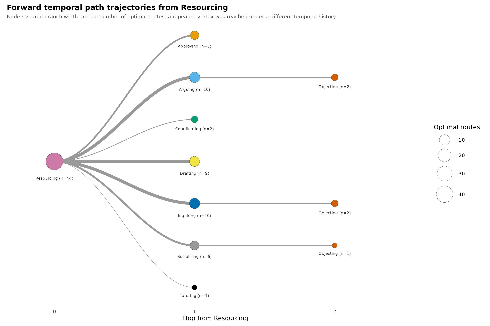
Socialising
| node | reachable | arrival_time | attained | latency | n_hops | n_paths | path_session | n_best_sessions |
|---|---|---|---|---|---|---|---|---|
| Approving | TRUE | 0.115 | TRUE | 0.115 | 1 | 1 | C | 1 |
| Arguing | TRUE | 0.100 | TRUE | 0.100 | 1 | 3 | NA | 3 |
| Coordinating | TRUE | 0.100 | TRUE | 0.100 | 1 | 6 | NA | 4 |
| Drafting | TRUE | 0.100 | TRUE | 0.100 | 1 | 3 | NA | 3 |
| Inquiring | TRUE | 0.107 | TRUE | 0.107 | 1 | 1 | A | 1 |
| Objecting | TRUE | 0.100 | TRUE | 0.100 | 1 | 1 | A | 1 |
| Resourcing | TRUE | 0.100 | TRUE | 0.100 | 1 | 9 | NA | 5 |
| Socialising | TRUE | 0.000 | TRUE | 0.000 | 0 | 1 | NA | 0 |
| Tutoring | TRUE | 0.100 | TRUE | 0.100 | 1 | 3 | NA | 3 |
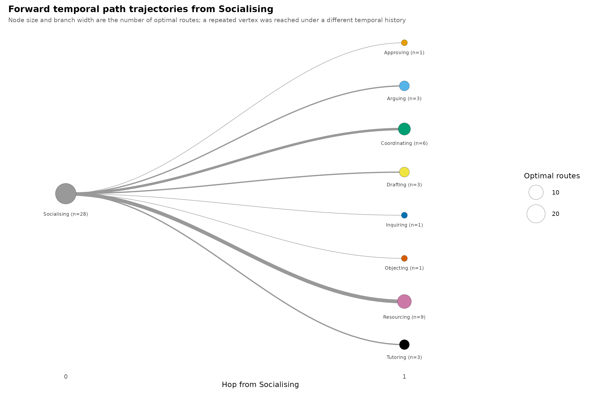
Tutoring
| node | reachable | arrival_time | attained | latency | n_hops | n_paths | path_session | n_best_sessions |
|---|---|---|---|---|---|---|---|---|
| Approving | TRUE | 0.1 | TRUE | 0.1 | 1 | 2 | NA | 2 |
| Arguing | TRUE | 0.1 | TRUE | 0.1 | 1 | 4 | NA | 3 |
| Coordinating | TRUE | 0.1 | TRUE | 0.1 | 1 | 2 | NA | 2 |
| Drafting | TRUE | 0.1 | TRUE | 0.1 | 1 | 1 | B | 1 |
| Inquiring | TRUE | 0.1 | TRUE | 0.1 | 1 | 2 | NA | 2 |
| Objecting | TRUE | 0.1 | TRUE | 0.1 | 1 | 1 | A | 1 |
| Resourcing | TRUE | 0.1 | TRUE | 0.1 | 1 | 6 | NA | 4 |
| Socialising | TRUE | 0.1 | TRUE | 0.1 | 1 | 3 | NA | 3 |
| Tutoring | TRUE | 0.0 | TRUE | 0.0 | 0 | 1 | NA | 0 |
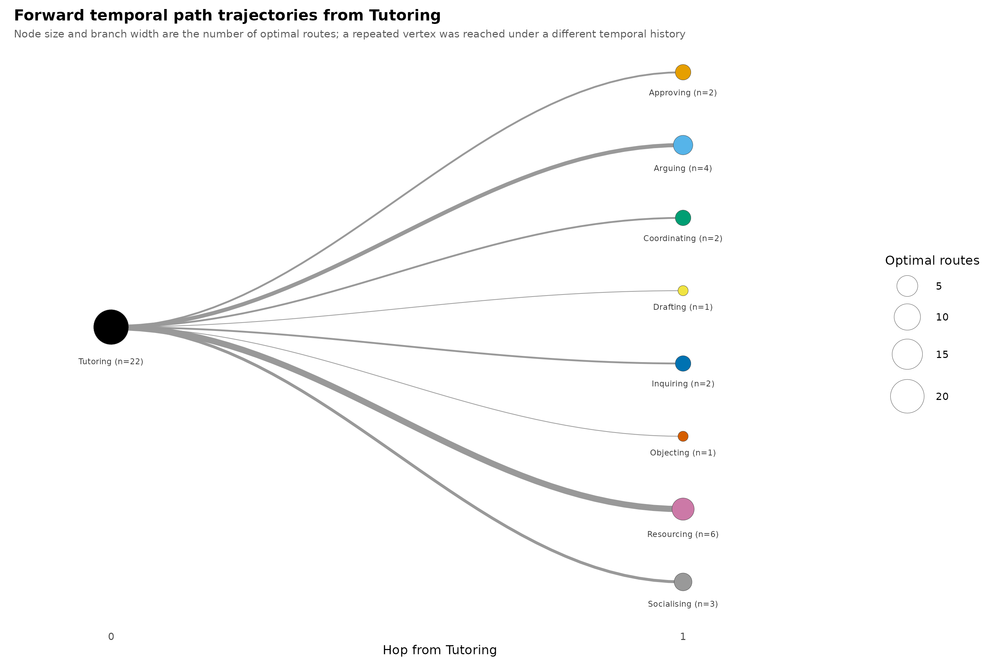
Read the tables together and the picture is consistent: because
almost every tie opens at time 0, every code reaches every other code,
and the n_hops and latency columns show it
doing so in one or two hops within a fraction of a day. The trees are
wide and shallow. That is a property of how the study built its spells —
a tie stays open until its discussion ends — not an artefact of the
traversal setting.
Backward temporal paths to every code
The complementary query in Visualize.Rmd was
tPath(direction = "bkwd", type = "latest.depart", start = 0),
again at graph.step.time = 0.1: which codes could have fed
into this one, leaving as late as possible. Dynet expresses it as
direction = "backward" with an explicit window. The
deadline here is end = 4, four days into the roughly
eight-day span; a later deadline admits the same senders but with longer
latencies, so the earlier deadline keeps the trees interpretable.
# Same reason for the loop as above: ordered side effects per code.
for (target_node in code_names) {
cat("\n\n## ", target_node, "\n\n", sep = "")
backward_paths <- paths(
dn, from = target_node, direction = "backward", start = 0, end = 4,
traversal_time = 0.1
)
print(knitr::kable(
as.data.frame(backward_paths), digits = 3,
caption = paste("Latest-departure paths into", target_node)
))
cat("\n\n")
print(plot_path_trajectories(
backward_paths, measure = "frequency", orientation = "horizontal"
))
cat("\n\n")
}Approving
| node | reachable | arrival_time | attained | latency | n_hops | n_paths | path_session | n_best_sessions |
|---|---|---|---|---|---|---|---|---|
| Approving | TRUE | 4.000 | TRUE | 0.000 | 0 | 1 | NA | 0 |
| Arguing | TRUE | 3.900 | TRUE | 0.100 | 1 | 1 | A | 1 |
| Coordinating | TRUE | 3.409 | TRUE | 0.591 | 2 | 1 | B | 1 |
| Drafting | TRUE | 3.030 | TRUE | 0.970 | 2 | 3 | A | 1 |
| Inquiring | TRUE | 3.800 | TRUE | 0.200 | 2 | 2 | A | 1 |
| Objecting | TRUE | 2.829 | TRUE | 1.171 | 2 | 2 | B | 1 |
| Resourcing | TRUE | 3.900 | TRUE | 0.100 | 1 | 1 | A | 1 |
| Socialising | TRUE | 3.800 | TRUE | 0.200 | 2 | 1 | A | 1 |
| Tutoring | TRUE | 3.800 | TRUE | 0.200 | 2 | 2 | A | 1 |
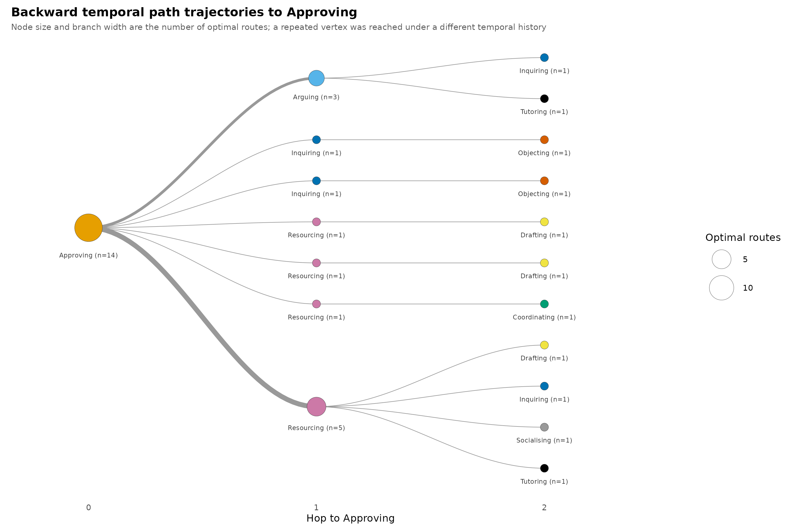
Arguing
| node | reachable | arrival_time | attained | latency | n_hops | n_paths | path_session | n_best_sessions |
|---|---|---|---|---|---|---|---|---|
| Approving | TRUE | 3.900 | TRUE | 0.100 | 1 | 1 | A | 1 |
| Arguing | TRUE | 4.000 | TRUE | 0.000 | 0 | 1 | NA | 0 |
| Coordinating | TRUE | 3.409 | TRUE | 0.591 | 2 | 2 | B | 1 |
| Drafting | TRUE | 3.030 | TRUE | 0.970 | 2 | 2 | A | 1 |
| Inquiring | TRUE | 3.900 | TRUE | 0.100 | 1 | 1 | A | 1 |
| Objecting | TRUE | 2.829 | TRUE | 1.171 | 2 | 1 | B | 1 |
| Resourcing | TRUE | 3.900 | TRUE | 0.100 | 1 | 1 | A | 1 |
| Socialising | TRUE | 3.800 | TRUE | 0.200 | 2 | 1 | A | 1 |
| Tutoring | TRUE | 3.900 | TRUE | 0.100 | 1 | 1 | A | 1 |
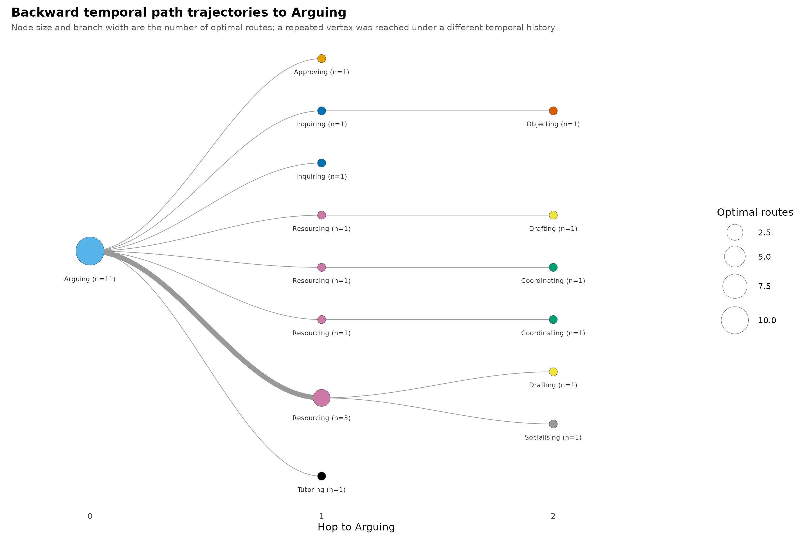
Coordinating
| node | reachable | arrival_time | attained | latency | n_hops | n_paths | path_session | n_best_sessions |
|---|---|---|---|---|---|---|---|---|
| Approving | TRUE | 3.067 | TRUE | 0.933 | 1 | 1 | A | 1 |
| Arguing | TRUE | 3.083 | TRUE | 0.917 | 1 | 1 | D | 1 |
| Coordinating | TRUE | 4.000 | TRUE | 0.000 | 0 | 1 | NA | 0 |
| Drafting | TRUE | 2.983 | TRUE | 1.017 | 2 | 1 | D | 1 |
| Inquiring | TRUE | 2.979 | TRUE | 1.021 | 2 | 1 | B | 1 |
| Objecting | TRUE | 2.829 | TRUE | 1.171 | 3 | 3 | B | 1 |
| Resourcing | TRUE | 3.083 | TRUE | 0.917 | 1 | 1 | D | 1 |
| Socialising | TRUE | 3.083 | TRUE | 0.917 | 1 | 1 | D | 1 |
| Tutoring | TRUE | 3.079 | TRUE | 0.921 | 1 | 1 | B | 1 |
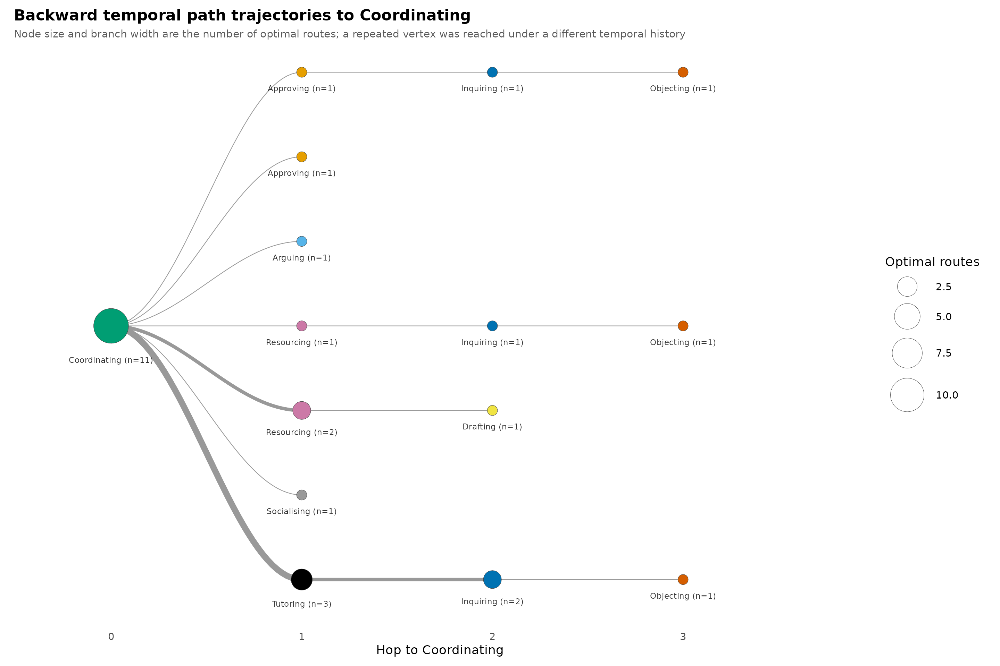
Drafting
| node | reachable | arrival_time | attained | latency | n_hops | n_paths | path_session | n_best_sessions |
|---|---|---|---|---|---|---|---|---|
| Approving | TRUE | 2.979 | TRUE | 1.021 | 1 | 1 | B | 1 |
| Arguing | TRUE | 3.008 | TRUE | 0.992 | 1 | 1 | A | 1 |
| Coordinating | TRUE | 2.930 | TRUE | 1.070 | 2 | 1 | A | 1 |
| Drafting | TRUE | 4.000 | TRUE | 0.000 | 0 | 1 | NA | 0 |
| Inquiring | TRUE | 2.930 | TRUE | 1.070 | 2 | 1 | A | 1 |
| Objecting | TRUE | 2.801 | TRUE | 1.199 | 2 | 1 | B | 1 |
| Resourcing | TRUE | 3.030 | TRUE | 0.970 | 1 | 1 | A | 1 |
| Socialising | TRUE | 3.008 | TRUE | 0.992 | 1 | 1 | A | 1 |
| Tutoring | TRUE | 2.930 | TRUE | 1.070 | 2 | 1 | A | 1 |
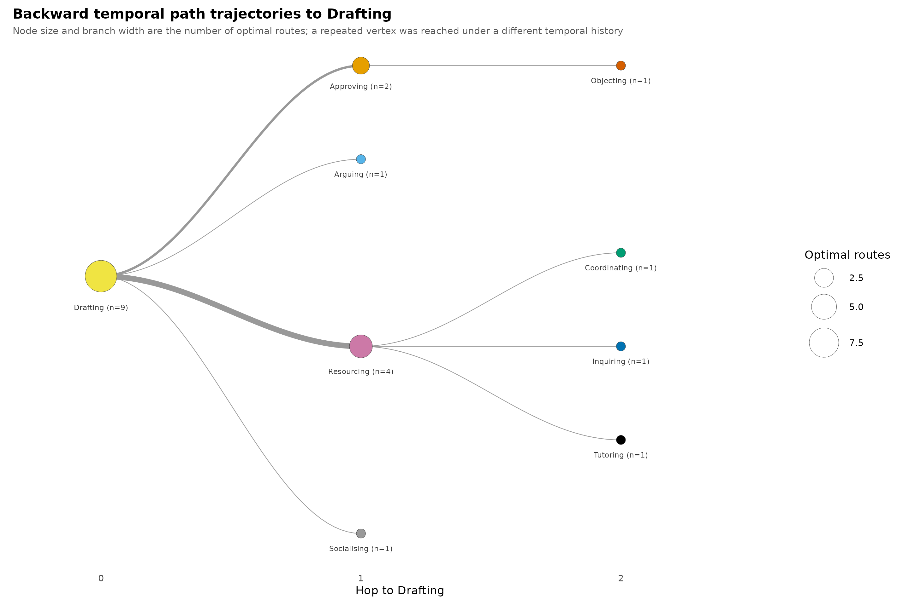
Inquiring
| node | reachable | arrival_time | attained | latency | n_hops | n_paths | path_session | n_best_sessions |
|---|---|---|---|---|---|---|---|---|
| Approving | TRUE | 3.900 | TRUE | 0.100 | 1 | 1 | A | 1 |
| Arguing | TRUE | 3.900 | TRUE | 0.100 | 1 | 1 | A | 1 |
| Coordinating | TRUE | 3.409 | TRUE | 0.591 | 3 | 1 | B | 1 |
| Drafting | TRUE | 3.030 | TRUE | 0.970 | 2 | 3 | A | 1 |
| Inquiring | TRUE | 4.000 | TRUE | 0.000 | 0 | 1 | NA | 0 |
| Objecting | TRUE | 2.829 | TRUE | 1.171 | 1 | 1 | B | 1 |
| Resourcing | TRUE | 3.900 | TRUE | 0.100 | 1 | 1 | A | 1 |
| Socialising | TRUE | 3.800 | TRUE | 0.200 | 2 | 1 | A | 1 |
| Tutoring | TRUE | 3.900 | TRUE | 0.100 | 1 | 1 | A | 1 |
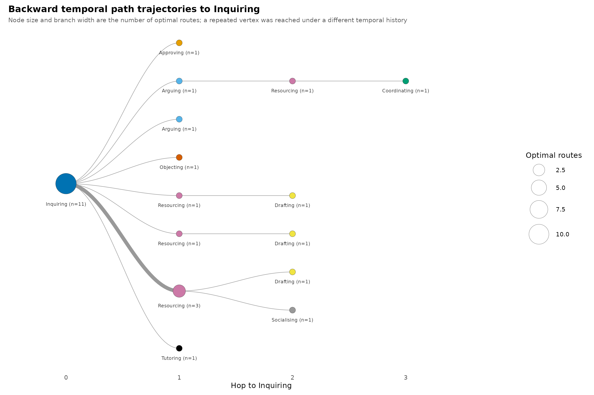
Objecting
| node | reachable | arrival_time | attained | latency | n_hops | n_paths | path_session | n_best_sessions |
|---|---|---|---|---|---|---|---|---|
| Approving | TRUE | 2.801 | TRUE | 1.199 | 1 | 1 | B | 1 |
| Arguing | TRUE | 2.729 | TRUE | 1.271 | 2 | 1 | B | 1 |
| Coordinating | TRUE | 2.729 | TRUE | 1.271 | 2 | 1 | B | 1 |
| Drafting | TRUE | 2.729 | TRUE | 1.271 | 2 | 1 | B | 1 |
| Inquiring | TRUE | 2.729 | TRUE | 1.271 | 2 | 1 | B | 1 |
| Objecting | TRUE | 4.000 | TRUE | 0.000 | 0 | 1 | NA | 0 |
| Resourcing | TRUE | 2.829 | TRUE | 1.171 | 1 | 1 | B | 1 |
| Socialising | TRUE | 2.801 | TRUE | 1.199 | 1 | 1 | B | 1 |
| Tutoring | TRUE | 2.729 | TRUE | 1.271 | 2 | 1 | B | 1 |
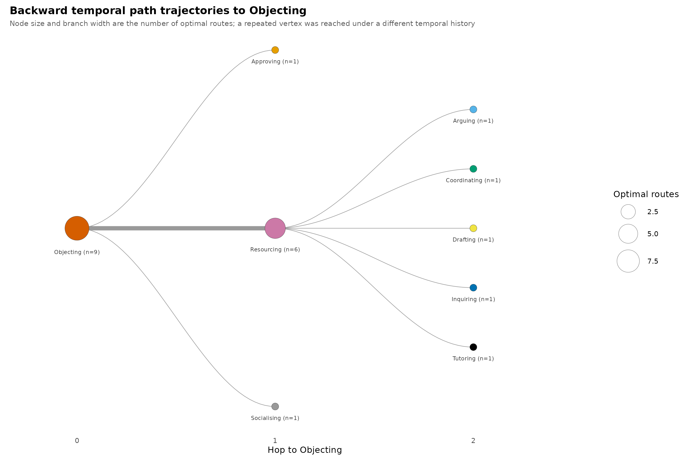
Resourcing
| node | reachable | arrival_time | attained | latency | n_hops | n_paths | path_session | n_best_sessions |
|---|---|---|---|---|---|---|---|---|
| Approving | TRUE | 3.900 | TRUE | 0.100 | 1 | 1 | A | 1 |
| Arguing | TRUE | 3.900 | TRUE | 0.100 | 1 | 1 | A | 1 |
| Coordinating | TRUE | 3.409 | TRUE | 0.591 | 1 | 1 | B | 1 |
| Drafting | TRUE | 3.030 | TRUE | 0.970 | 1 | 1 | A | 1 |
| Inquiring | TRUE | 3.900 | TRUE | 0.100 | 1 | 1 | A | 1 |
| Objecting | TRUE | 3.113 | TRUE | 0.887 | 1 | 1 | C | 1 |
| Resourcing | TRUE | 4.000 | TRUE | 0.000 | 0 | 1 | NA | 0 |
| Socialising | TRUE | 3.900 | TRUE | 0.100 | 1 | 1 | A | 1 |
| Tutoring | TRUE | 3.900 | TRUE | 0.100 | 1 | 1 | A | 1 |
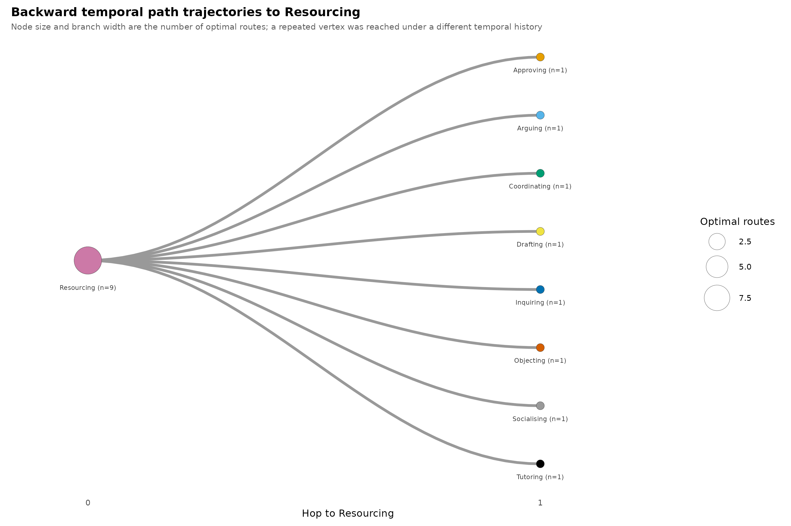
Socialising
| node | reachable | arrival_time | attained | latency | n_hops | n_paths | path_session | n_best_sessions |
|---|---|---|---|---|---|---|---|---|
| Approving | TRUE | 3.900 | TRUE | 0.100 | 1 | 1 | A | 1 |
| Arguing | TRUE | 3.837 | TRUE | 0.163 | 1 | 1 | B | 1 |
| Coordinating | TRUE | 3.409 | TRUE | 0.591 | 2 | 1 | B | 1 |
| Drafting | TRUE | 3.030 | TRUE | 0.970 | 2 | 4 | A | 1 |
| Inquiring | TRUE | 3.900 | TRUE | 0.100 | 1 | 1 | A | 1 |
| Objecting | TRUE | 2.829 | TRUE | 1.171 | 2 | 2 | B | 1 |
| Resourcing | TRUE | 3.837 | TRUE | 0.163 | 1 | 1 | B | 1 |
| Socialising | TRUE | 4.000 | TRUE | 0.000 | 0 | 1 | NA | 0 |
| Tutoring | TRUE | 3.800 | TRUE | 0.200 | 2 | 1 | A | 1 |
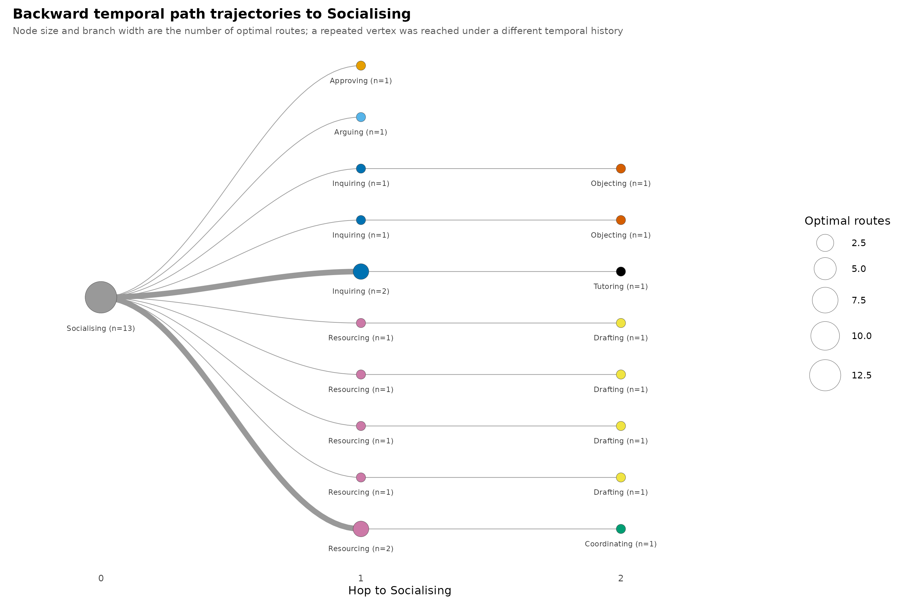
Tutoring
| node | reachable | arrival_time | attained | latency | n_hops | n_paths | path_session | n_best_sessions |
|---|---|---|---|---|---|---|---|---|
| Approving | TRUE | 3.760 | TRUE | 0.240 | 2 | 2 | B | 1 |
| Arguing | TRUE | 3.860 | TRUE | 0.140 | 1 | 1 | B | 1 |
| Coordinating | TRUE | 3.409 | TRUE | 0.591 | 2 | 1 | B | 1 |
| Drafting | TRUE | 3.030 | TRUE | 0.970 | 2 | 2 | A | 1 |
| Inquiring | TRUE | 3.837 | TRUE | 0.163 | 1 | 1 | B | 1 |
| Objecting | TRUE | 2.829 | TRUE | 1.171 | 2 | 1 | B | 1 |
| Resourcing | TRUE | 3.860 | TRUE | 0.140 | 1 | 1 | B | 1 |
| Socialising | TRUE | 3.760 | TRUE | 0.240 | 2 | 1 | B | 1 |
| Tutoring | TRUE | 4.000 | TRUE | 0.000 | 0 | 1 | NA | 0 |
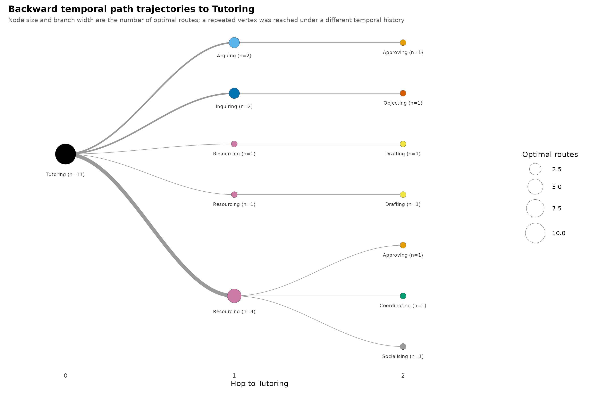
In these trees the queried code is the root and the possible senders
branch away from it, so a branch is read right to left in time:
arrival_time is the latest moment a sender could have
departed and still reach the root by the deadline.
Every temporal view, on this network
The study drew its process with ndtv: a proximity
timeline and animated snapshots. Dynet has nine views of a temporal
network and a plot for every result class. They are all shown here on
the same object, so the reader can pick the one that answers the
question at hand. Node-link rendering is cograph’s throughout.
Contacts as curved links on the time axis
type = "events" draws every contact at the moment it
fires, actors on the vertical axis, each link leaving its source in the
source’s colour and arriving in the target’s. On the whole network only
the busiest pairs are legible, so the first picture keeps the thirty
busiest and the rest use one course group, A_01, where
every reply can be seen.
plot(dn, type = "events", top = 30)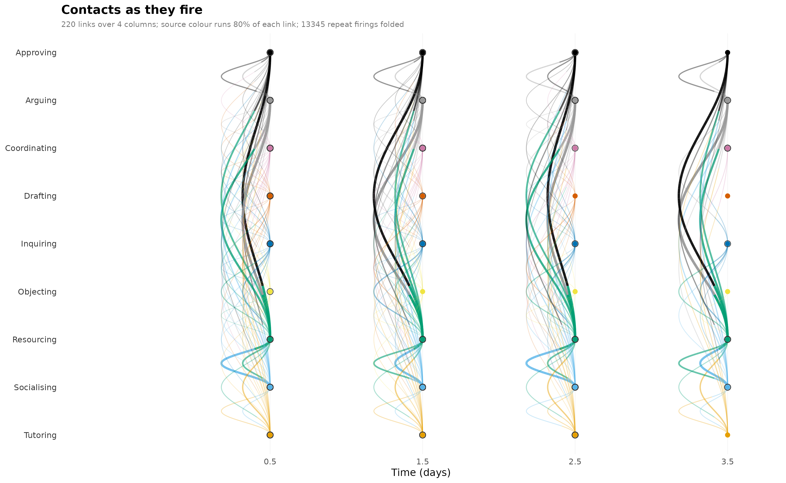
plot(one_group, type = "events")
The link glyph is a choice. "hook" above is the default;
the other four are arcs, chevrons, waves and brackets, each with the
same colour run.
plot(one_group, type = "events", link = "arc")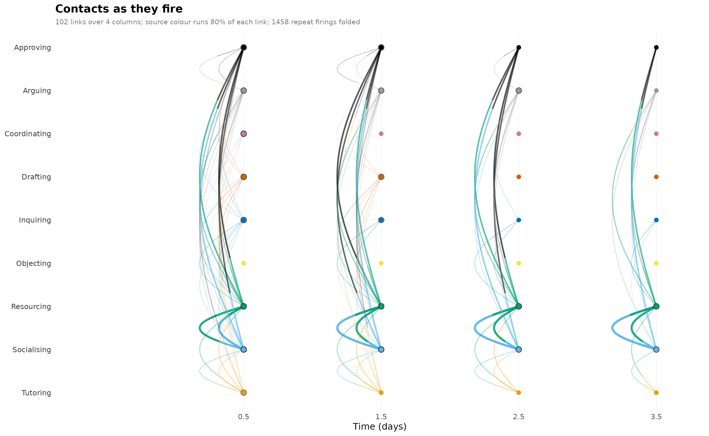
plot(one_group, type = "events", link = "chevron")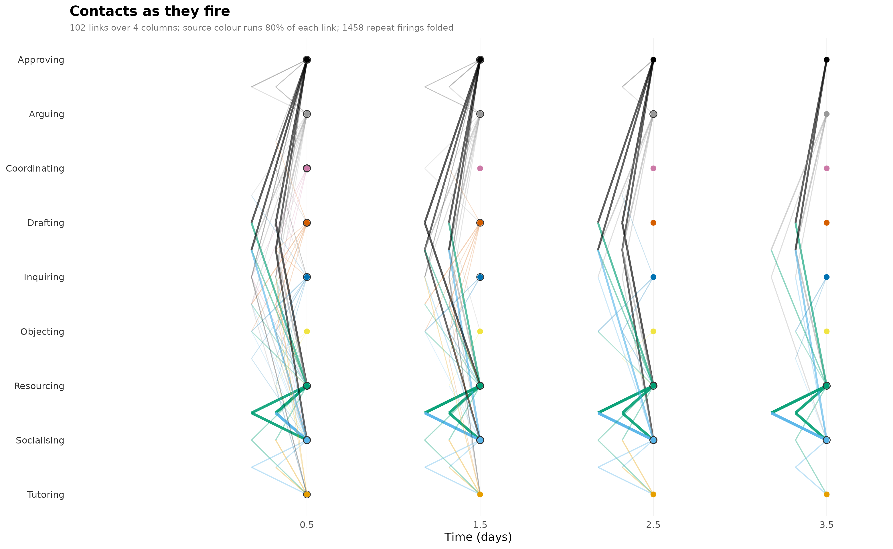
plot(one_group, type = "events", link = "wave")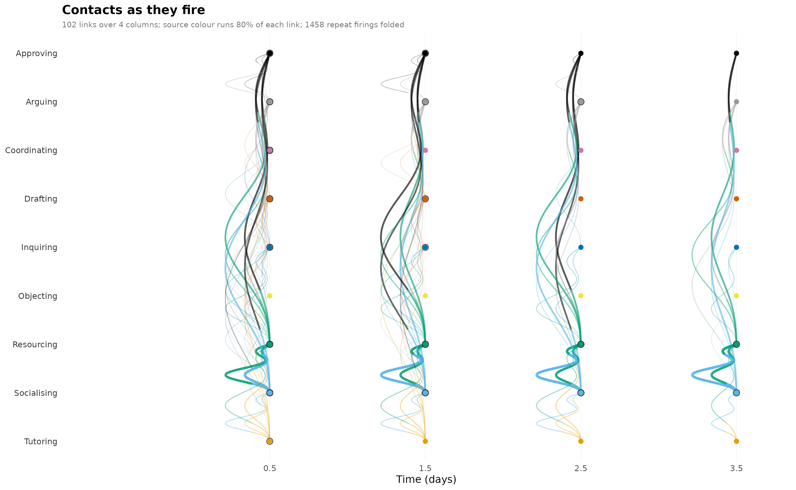
plot(one_group, type = "events", link = "bracket")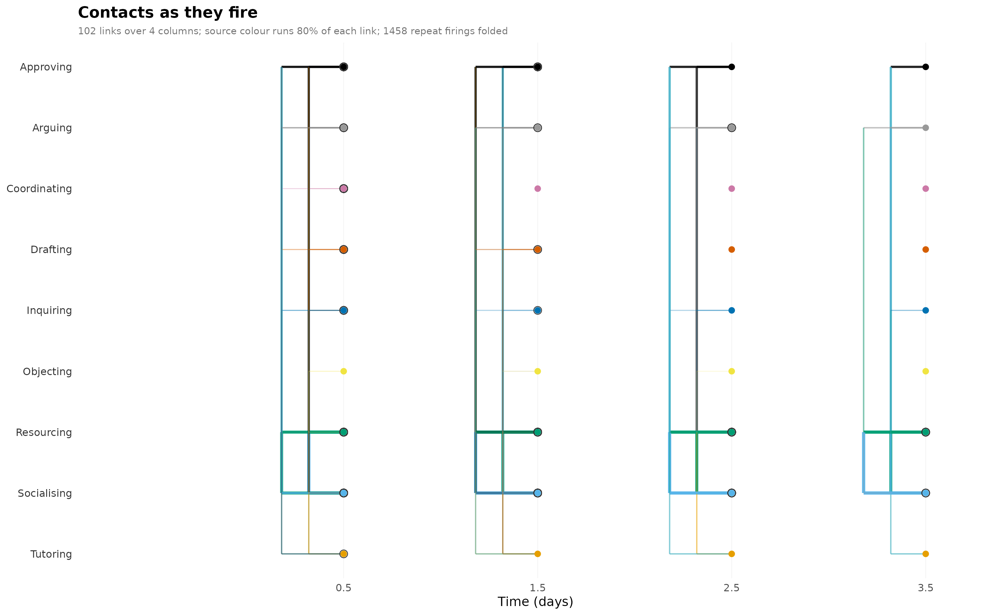
curvature sets how far a link bows (0 is
straight), and time = "clock" places each contact at its
exact time rather than in its bin, with blend mixing the
two endpoint colours along the link (both with the default hook).
plot(one_group, type = "events", curvature = 0)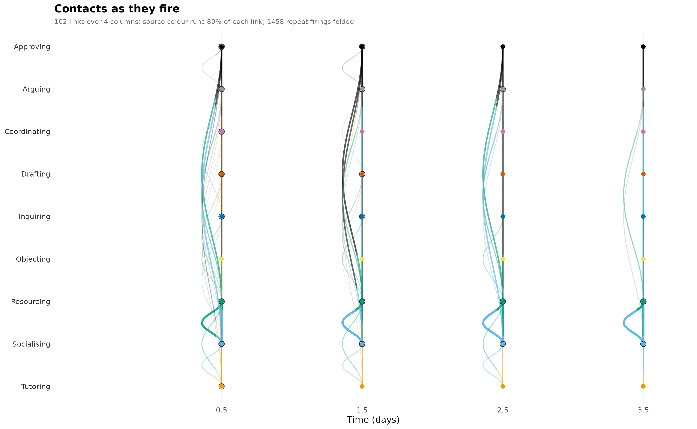
plot(one_group, type = "events", time = "clock", blend = TRUE)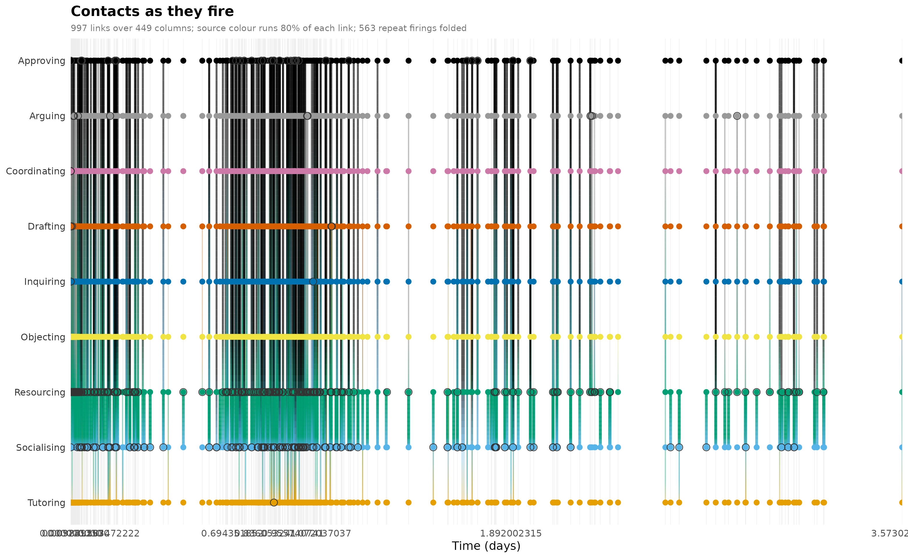
The other eight views
"activity": ties forming and dissolving over time.
plot(dn, type = "activity")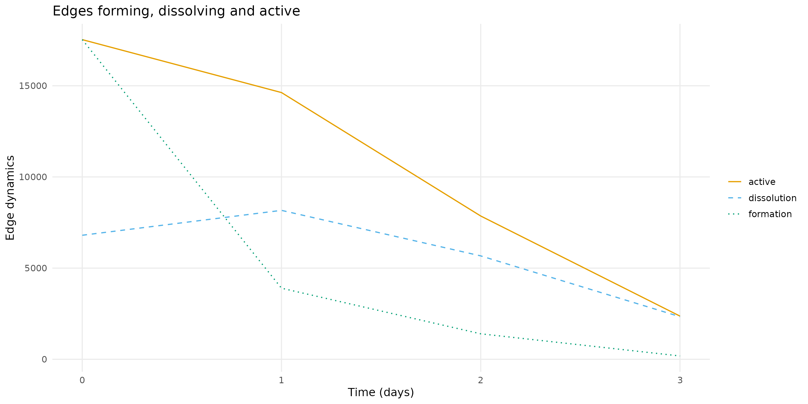
"network" at one bin, against the whole-window picture
drawn earlier:
plot(dn, type = "network", at = 1)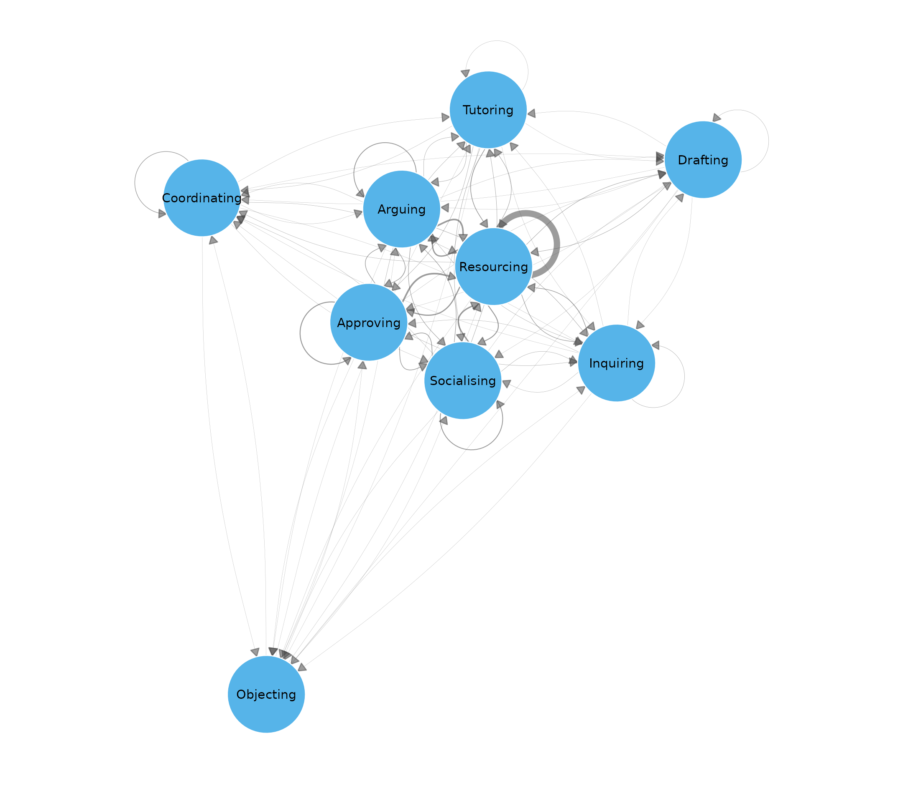
"snapshots", "layers",
"heatmap", "stack" and
"proximity" are drawn in the sections above with the
study’s settings; "timeline" opens the document. Two more
proximity readings close the set: the lines alone, driven by
betweenness, and two codes highlighted against the rest.
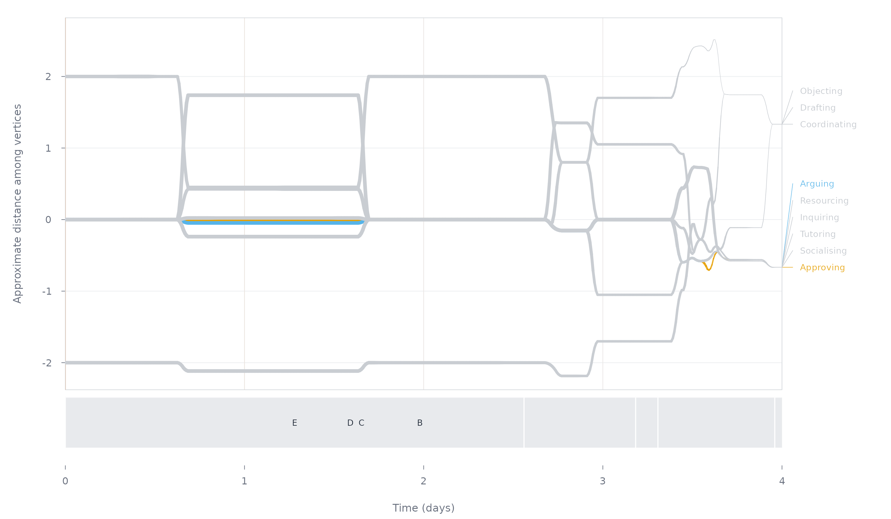
Plots of every result class
Routes on a real time axis: pathways() ranks whole
time-respecting routes by how often they are used; the plot places a
point per vertex at the moment the route reaches it, so a horizontal gap
is waiting time.
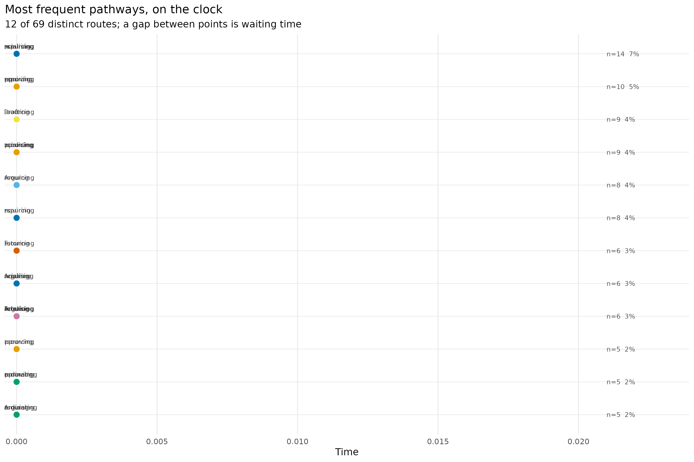
Similarity between every pair of half-day bins, as a heatmap:
bin_similarity <- similarity(dn, step = 0.5, window = 0.5)
plot(bin_similarity)
Gibson’s participation shifts, the thirteen ways one turn follows another:

Burstiness and memory of each code’s activity:
bursts <- burstiness(dn)
plot(bursts)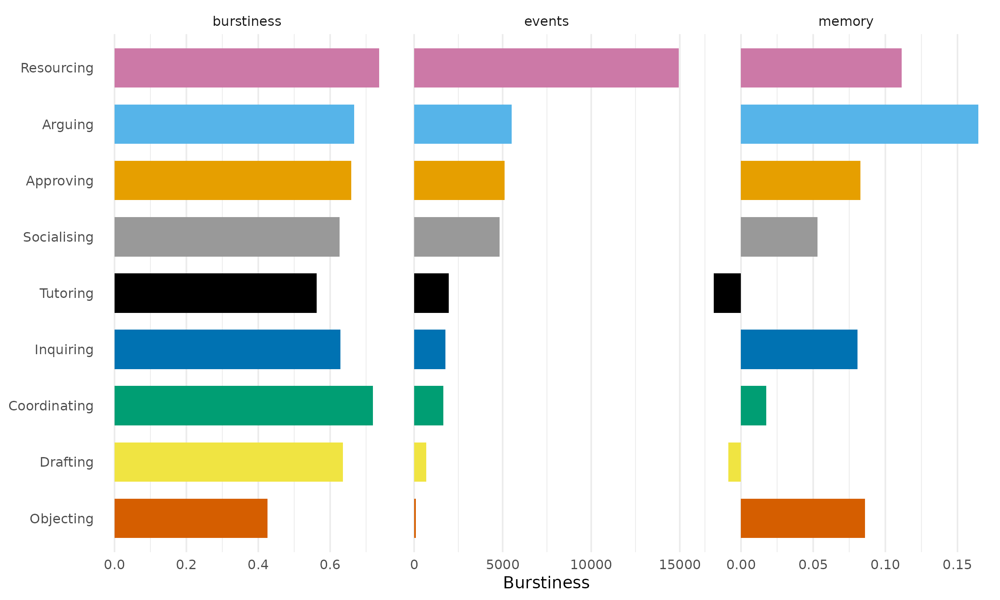
Tie durations by pair, and reachability, both already tabulated above:
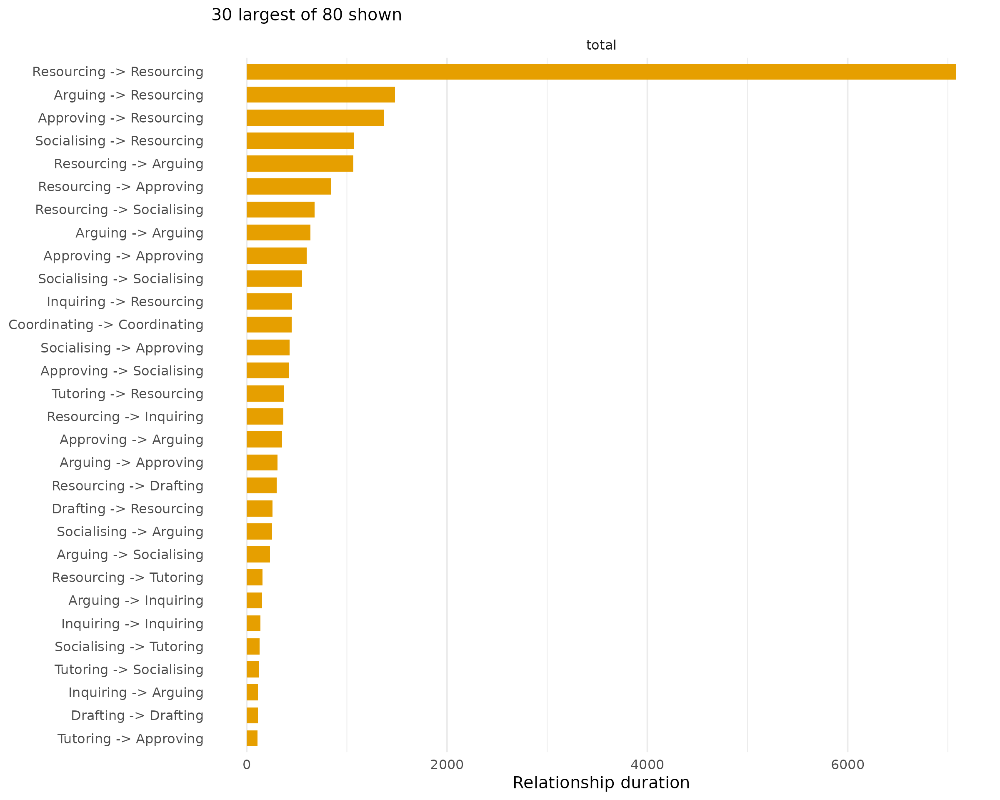
reach <- dyn_reachability(dn)
plot(reach)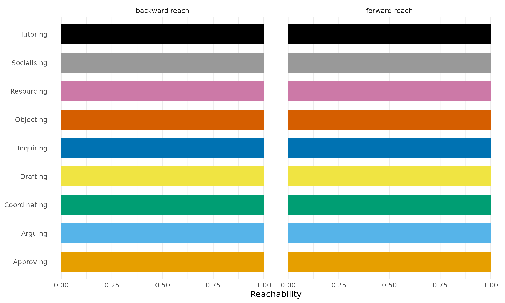
Snapshots as a result object rather than a view:
The three trajectory-tree colourings, horizontal and vertical, for the forward paths from Inquiring:
inquiry <- path_trajectories(paths(dn, from = "Inquiring"))
plot_path_trajectories(inquiry, measure = "frequency")
plot_path_trajectories(inquiry, measure = "time", orientation = "vertical")
plot_path_trajectories(inquiry, measure = "predictability")The path network of those same paths, as a cograph node-link drawing:
from_inquiring <- paths(dn, from = "Inquiring")
inquiring_network <- path_network(from_inquiring)
plot(inquiring_network, layout = "oval")Course-group temporal subnetwork
CraeteGROUP.Rmd split the interaction table by
course_group and rebuilt a separate
networkDynamic object for each group. Dynet keeps the tie
attributes from the import, so a group is a selection over the existing
network rather than a second construction:
induce_subgraph() accepts a mask over the spell table,
which is exactly the legacy filter expressed as an argument.
thought_chains keeps the course group as
group, so the study’s split is one condition on the spell
table: no mask has to be built first.
summary(one_group)## property value
## 1 format threaded
## 2 directed yes
## 3 vertices 9
## 4 edge spells 2425
## 5 distinct pairs 53
## 6 time unit days
## 7 observed from 0
## 8 observed to 4
## 9 span 4
## 10 bin width 1
## 11 time bins 4
## 12 mean snapshot density 0.559
## 13 temporal density not computed
## 14 sessions 1
## 15 vertex attributes noneThe subnetwork is a selection over the existing object, not a second construction, and it is small enough to read code by code.
plot(one_group, type = "network", layout = "oval")
plot(one_group, type = "timeline")
plot(one_group, type = "snapshots", panels = 9)Reproduction audit
The claims made at the top are checked here rather than asserted.
Every verb used came from Dynet’s public interface. If any of these were internal, or had been renamed, the check below would say so.
verbs_used <- c(
"as_dynet", "collapse_network", "events", "metrics", "mixing",
"durations", "dyn_centrality", "dyn_reachability", "paths",
"path_trajectories", "plot_path_trajectories", "induce_subgraph",
"pathways", "similarity", "pshifts", "burstiness", "snapshots",
"projection", "collapse_network", "path_network"
)
data.frame(
verb = verbs_used,
exported = verbs_used %in% getNamespaceExports("Dynet")
)## verb exported
## 1 as_dynet TRUE
## 2 collapse_network TRUE
## 3 events TRUE
## 4 metrics TRUE
## 5 mixing TRUE
## 6 durations TRUE
## 7 dyn_centrality TRUE
## 8 dyn_reachability TRUE
## 9 paths TRUE
## 10 path_trajectories TRUE
## 11 plot_path_trajectories TRUE
## 12 induce_subgraph TRUE
## 13 pathways TRUE
## 14 similarity TRUE
## 15 pshifts TRUE
## 16 burstiness TRUE
## 17 snapshots TRUE
## 18 projection TRUE
## 19 collapse_network TRUE
## 20 path_network TRUEThe analysed network is the saved network, unaltered. Re-importing the file after every statistic above has been computed must give an object identical to the one they were computed on.
identical(dn, dynet(thought_chains, thread = "discussion",
thread_clock = "relative", loops = TRUE))## Keeping 9452 self-loop event(s); each adds two to its vertex's degree.## [1] FALSEThe self-loops were kept, not quietly dropped. The
study built the network with loops = TRUE. The count of
loop spells in the imported network and the self-pairs carried through
to the pair-duration table must agree.
with(as.data.frame(dn), sum(from == to))## [1] 9452
subset(as.data.frame(pair_duration), from == to & measure == "events")## from to measure value
## 1 Approving Approving events 719
## 11 Arguing Arguing events 670
## 21 Coordinating Coordinating events 1059
## 31 Drafting Drafting events 83
## 41 Inquiring Inquiring events 129
## 50 Objecting Objecting events 1
## 60 Resourcing Resourcing events 6049
## 70 Socialising Socialising events 664
## 80 Tutoring Tutoring events 78What this document does not establish: it is not a
numerical parity test against tsna. The sweep grid differs
from the original by design (hourly against the study’s daily interval),
a few measures are the nearest documented counterpart rather than the
identical estimator, and no output here was compared value-by-value with
a tsna run. The claim is that each analytical step of the
study is available as one Dynet verb on the study’s own data, and that
the results are internally consistent — not that the two implementations
agree to floating-point tolerance.
Session information
## R version 4.6.1 (2026-06-24)
## Platform: x86_64-pc-linux-gnu
## Running under: Ubuntu 24.04.5 LTS
##
## Matrix products: default
## BLAS: /usr/lib/x86_64-linux-gnu/openblas-pthread/libblas.so.3
## LAPACK: /usr/lib/x86_64-linux-gnu/openblas-pthread/libopenblasp-r0.3.26.so; LAPACK version 3.12.0
##
## locale:
## [1] LC_CTYPE=C.UTF-8 LC_NUMERIC=C LC_TIME=C.UTF-8
## [4] LC_COLLATE=C.UTF-8 LC_MONETARY=C.UTF-8 LC_MESSAGES=C.UTF-8
## [7] LC_PAPER=C.UTF-8 LC_NAME=C LC_ADDRESS=C
## [10] LC_TELEPHONE=C LC_MEASUREMENT=C.UTF-8 LC_IDENTIFICATION=C
##
## time zone: UTC
## tzcode source: system (glibc)
##
## attached base packages:
## [1] stats graphics grDevices utils datasets methods base
##
## other attached packages:
## [1] cograph_2.6.12 Dynet_0.4.10
##
## loaded via a namespace (and not attached):
## [1] gtable_0.3.6 jsonlite_2.0.0 dplyr_1.2.1 compiler_4.6.1
## [5] tidyselect_1.2.1 jquerylib_0.1.4 systemfonts_1.3.2 scales_1.4.0
## [9] textshaping_1.0.5 yaml_2.3.12 fastmap_1.2.0 ggplot2_4.0.3
## [13] R6_2.6.1 labeling_0.4.3 generics_0.1.4 igraph_2.3.3
## [17] knitr_1.52 tibble_3.3.1 desc_1.4.3 bslib_0.12.0
## [21] pillar_1.11.1 RColorBrewer_1.1-3 rlang_1.3.0 cachem_1.1.0
## [25] xfun_0.61 fs_2.1.0 sass_0.4.10 S7_0.2.2
## [29] otel_0.2.0 cli_3.6.6 pkgdown_2.2.1 withr_3.0.3
## [33] magrittr_2.0.5 digest_0.6.39 grid_4.6.1 lifecycle_1.0.5
## [37] vctrs_0.7.3 evaluate_1.0.5 glue_1.8.1 farver_2.1.2
## [41] ragg_1.5.2 rmarkdown_2.32 tools_4.6.1 pkgconfig_2.0.3
## [45] htmltools_0.5.9